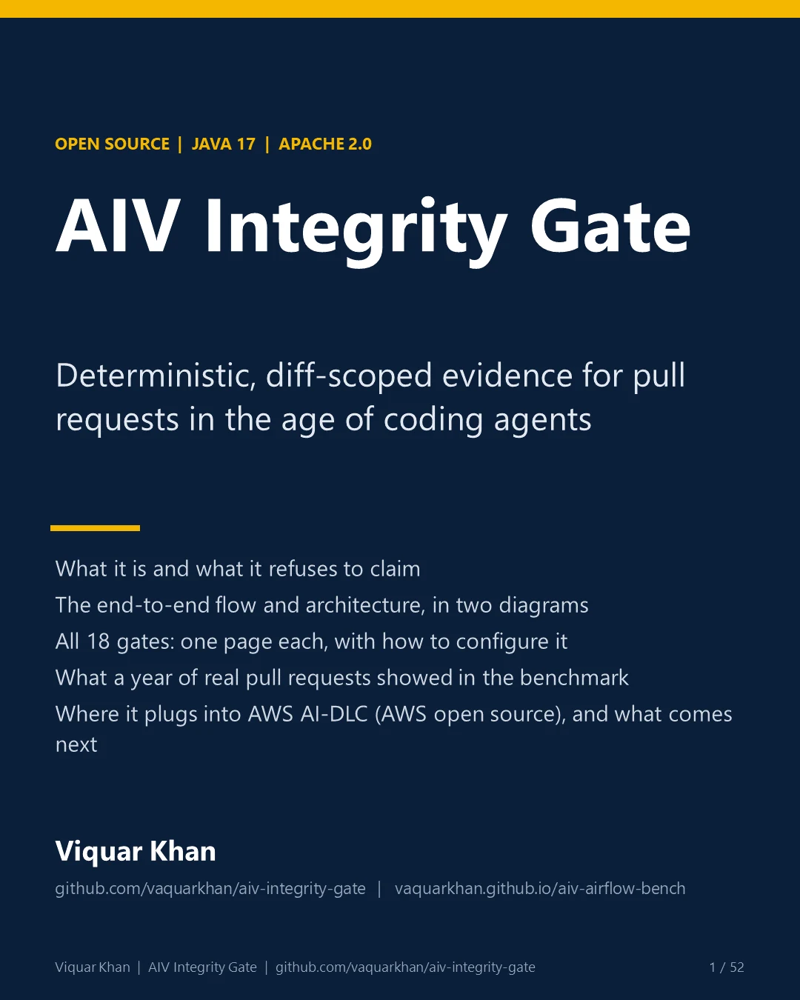
Slide 1 text
OPEN SOURCE | JAVA 17 | APACHE 2.0
AIV Integrity Gate
Deterministic, diff-scoped evidence for pull requests in the age of coding agents
What it is and what it refuses to claim
The end-to-end flow and architecture, in two diagrams
All 18 gates: one page each, with how to configure it
What a year of real pull requests showed in the benchmark
Where it plugs into AWS AI-DLC (AWS open source), and what comes next
Viquar Khan
github.com/vaquarkhan/aiv-integrity-gate | vaquarkhan.github.io/aiv-airflow-bench
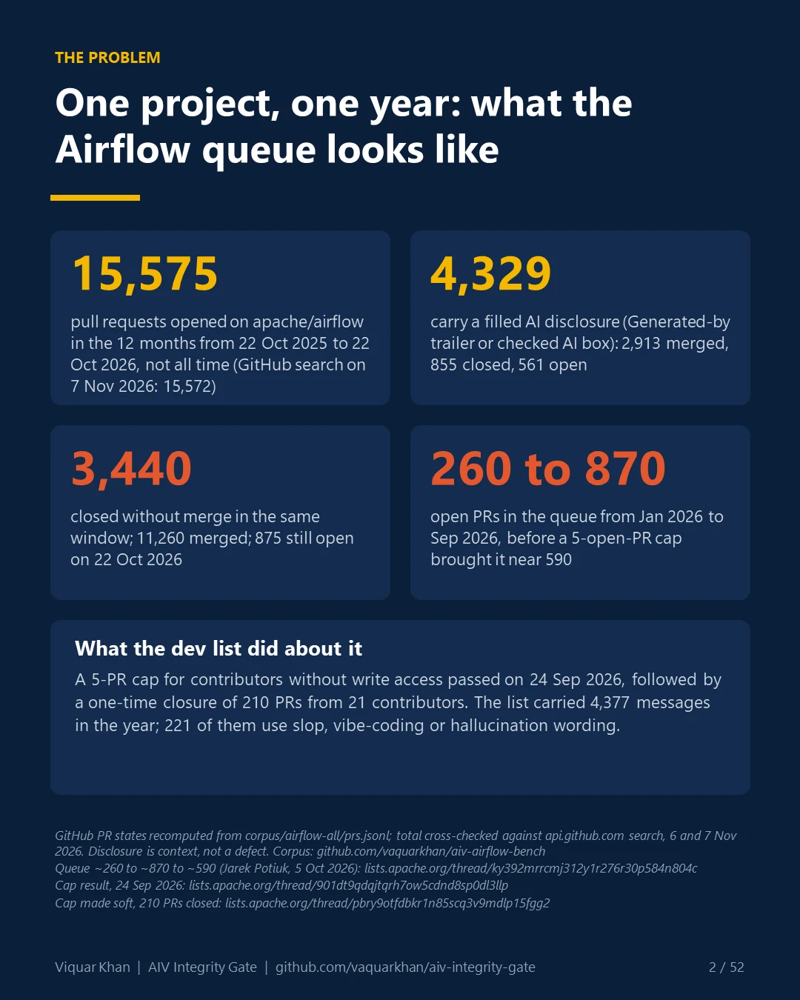
Slide 2 text
THE PROBLEM
One project, one year: what the Airflow queue looks like
15,575
4,329
pull requests opened on apache/airflow in the 12 months from 22 Oct 2025 to 22 Oct 2026, not all time (GitHub search on 7 Nov 2026: 15,572)
carry a filled AI disclosure (Generated-by trailer or checked AI box): 2,913 merged, 855 closed, 561 open
3,440
260 to 870
closed without merge in the same window; 11,260 merged; 875 still open on 22 Oct 2026
open PRs in the queue from Jan 2026 to Sep 2026, before a 5-open-PR cap brought it near 590
What the dev list did about it
A 5-PR cap for contributors without write access passed on 24 Sep 2026, followed by a one-time closure of 210 PRs from 21 contributors. The list carried 4,377 messages in the year; 221 of them use slop, vibe-coding or hallucination wording.
GitHub PR states recomputed from corpus/airflow-all/prs.jsonl; total cross-checked against api.github.com search, 6 and 7 Nov 2026. Disclosure is context, not a defect. Corpus: github.com/vaquarkhan/aiv-airflow-bench
Queue ~260 to ~870 to ~590 (Jarek Potiuk, 5 Oct 2026): lists.apache.org/thread/ky392mrrcmj312y1r276r30p584n804c
Cap result, 24 Sep 2026: lists.apache.org/thread/901dt9qdqjtqrh7ow5cdnd8sp0dl3llp
Cap made soft, 210 PRs closed: lists.apache.org/thread/pbry9otfdbkr1n85scq3v9mdlp15fgg2
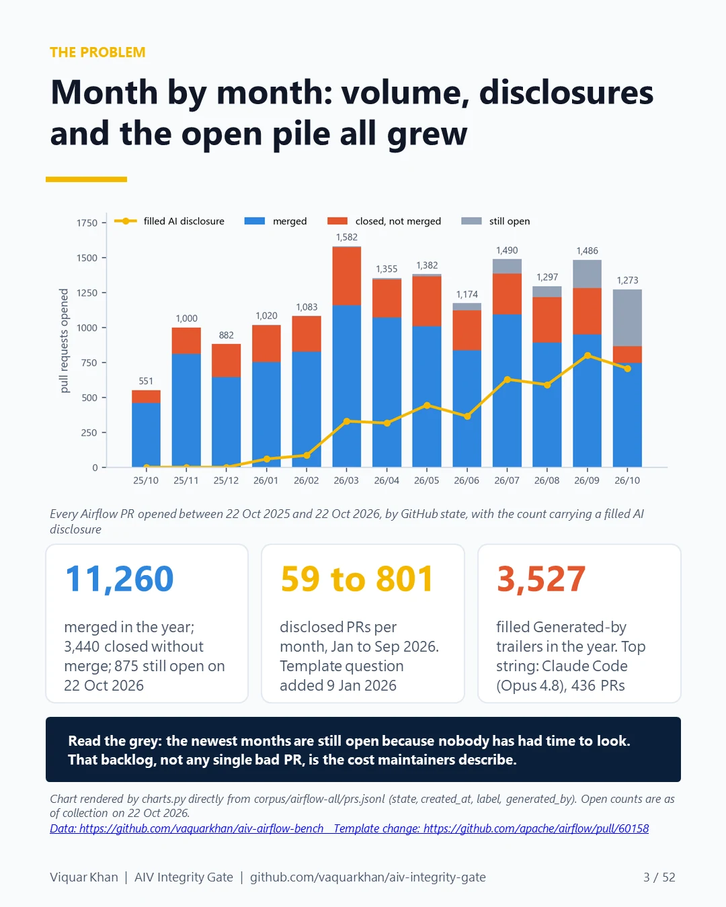
Slide 3 text
THE PROBLEM
Month by month: volume, disclosures and the open pile all grew
Every Airflow PR opened between 22 Oct 2025 and 22 Oct 2026, by GitHub state, with the count carrying a filled AI disclosure
11,260
59 to 801
3,527
merged in the year; 3,440 closed without merge; 875 still open on 22 Oct 2026
disclosed PRs per month, Jan to Sep 2026. Template question added 9 Jan 2026
filled Generated-by trailers in the year. Top string: Claude Code (Opus 4.8), 436 PRs
Read the grey: the newest months are still open because nobody has had time to look. That backlog, not any single bad PR, is the cost maintainers describe.
Chart rendered by charts.py directly from corpus/airflow-all/prs.jsonl (state, created_at, label, generated_by). Open counts are as of collection on 22 Oct 2026.
Data: https://github.com/vaquarkhan/aiv-airflow-bench Template change: https://github.com/apache/airflow/pull/60158
Links on this slide
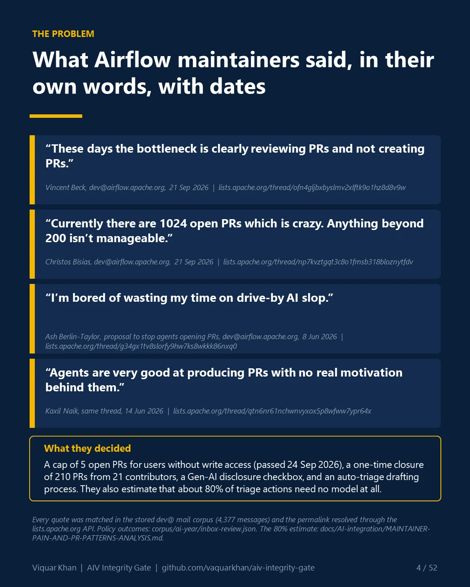
Slide 4 text
THE PROBLEM
What Airflow maintainers said, in their own words, with dates
“These days the bottleneck is clearly reviewing PRs and not creating PRs.”
Vincent Beck, dev@airflow.apache.org, 21 Sep 2026 | lists.apache.org/thread/ofn4gljbxbyslmv2xlftk9o1hz8d8v9w
“Currently there are 1024 open PRs which is crazy. Anything beyond 200 isn’t manageable.”
Christos Bisias, dev@airflow.apache.org, 21 Sep 2026 | lists.apache.org/thread/np7kvztgqt3c8o1fmsb318bloznytfdv
“I’m bored of wasting my time on drive-by AI slop.”
Ash Berlin-Taylor, proposal to stop agents opening PRs, dev@airflow.apache.org, 8 Jun 2026 | lists.apache.org/thread/g34gx1tv8slorfy9hw7ks8wkkk86nxq0
“Agents are very good at producing PRs with no real motivation behind them.”
Kaxil Naik, same thread, 14 Jun 2026 | lists.apache.org/thread/qtn6nr61nchwnvyxox5p8wfww7ypr64x
What they decided
A cap of 5 open PRs for users without write access (passed 24 Sep 2026), a one-time closure of 210 PRs from 21 contributors, a Gen-AI disclosure checkbox, and an auto-triage drafting process. They also estimate that about 80% of triage actions need no model at all.
Every quote was matched in the stored dev@ mail corpus (4,377 messages) and the permalink resolved through the lists.apache.org API. Policy outcomes: corpus/ai-year/inbox-review.json. The 80% estimate: docs/AI-integration/MAINTAINER-PAIN-AND-PR-PATTERNS-ANALYSIS.md.
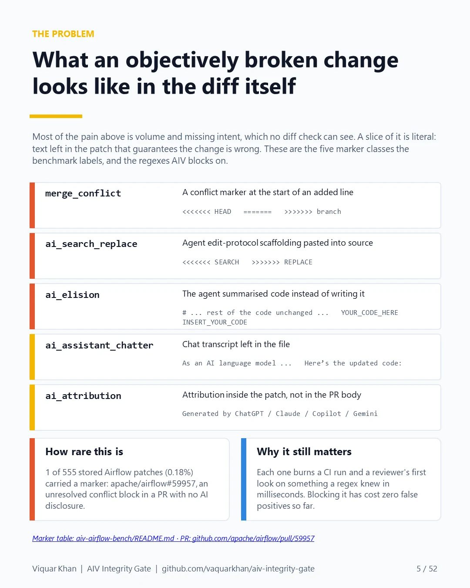
Slide 5 text
THE PROBLEM
What an objectively broken change looks like in the diff itself
Most of the pain above is volume and missing intent, which no diff check can see. A slice of it is literal: text left in the patch that guarantees the change is wrong. These are the five marker classes the benchmark labels, and the regexes AIV blocks on.
merge_conflict
A conflict marker at the start of an added line
<<<<<<< HEAD ======= >>>>>>> branch
ai_search_replace
Agent edit-protocol scaffolding pasted into source
<<<<<<< SEARCH >>>>>>> REPLACE
ai_elision
The agent summarised code instead of writing it
# ... rest of the code unchanged ... YOUR_CODE_HERE INSERT_YOUR_CODE
ai_assistant_chatter
Chat transcript left in the file
As an AI language model ... Here’s the updated code:
ai_attribution
Attribution inside the patch, not in the PR body
Generated by ChatGPT / Claude / Copilot / Gemini
How rare this is
Why it still matters
1 of 555 stored Airflow patches (0.18%) carried a marker: apache/airflow#59957, an unresolved conflict block in a PR with no AI disclosure.
Each one burns a CI run and a reviewer's first look on something a regex knew in milliseconds. Blocking it has cost zero false positives so far.
Marker table: aiv-airflow-bench/README.md · PR: github.com/apache/airflow/pull/59957
Links on this slide
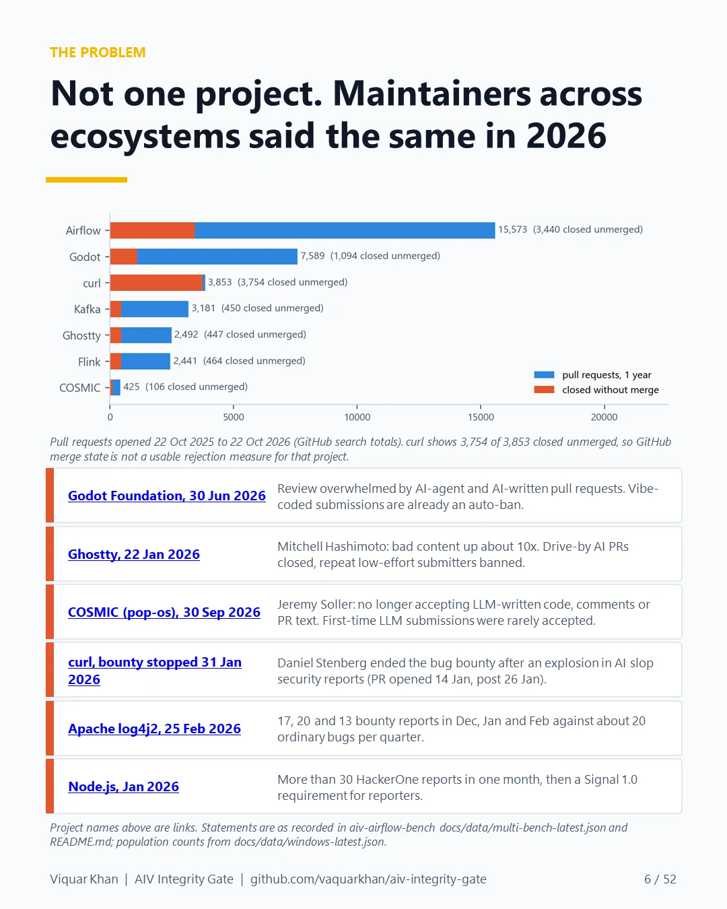
Slide 6 text
THE PROBLEM
Not one project. Maintainers across ecosystems said the same in 2026
Pull requests opened 22 Oct 2025 to 22 Oct 2026 (GitHub search totals). curl shows 3,754 of 3,853 closed unmerged, so GitHub merge state is not a usable rejection measure for that project.
Godot Foundation, 30 Jun 2026
Review overwhelmed by AI-agent and AI-written pull requests. Vibe-coded submissions are already an auto-ban.
Ghostty, 22 Jan 2026
Mitchell Hashimoto: bad content up about 10x. Drive-by AI PRs closed, repeat low-effort submitters banned.
COSMIC (pop-os), 30 Sep 2026
Jeremy Soller: no longer accepting LLM-written code, comments or PR text. First-time LLM submissions were rarely accepted.
curl, bounty stopped 31 Jan 2026
Daniel Stenberg ended the bug bounty after an explosion in AI slop security reports (PR opened 14 Jan, post 26 Jan).
Apache log4j2, 25 Feb 2026
17, 20 and 13 bounty reports in Dec, Jan and Feb against about 20 ordinary bugs per quarter.
Node.js, Jan 2026
More than 30 HackerOne reports in one month, then a Signal 1.0 requirement for reporters.
Project names above are links. Statements are as recorded in aiv-airflow-bench docs/data/multi-bench-latest.json and README.md; population counts from docs/data/windows-latest.json.
Links on this slide
- godotengine.org/article/contribution-policy-2026/
- github.com/ghostty-org/ghostty/pull/10412
- linuxiac.com/cosmic-stops-accepting-llm-generated-content-in-pull-requests/
- github.com/curl/curl/pull/20312
- github.com/apache/logging-log4j2/discussions/4052
- nodejs.org/en/blog/announcements/hackerone-signal-requirement
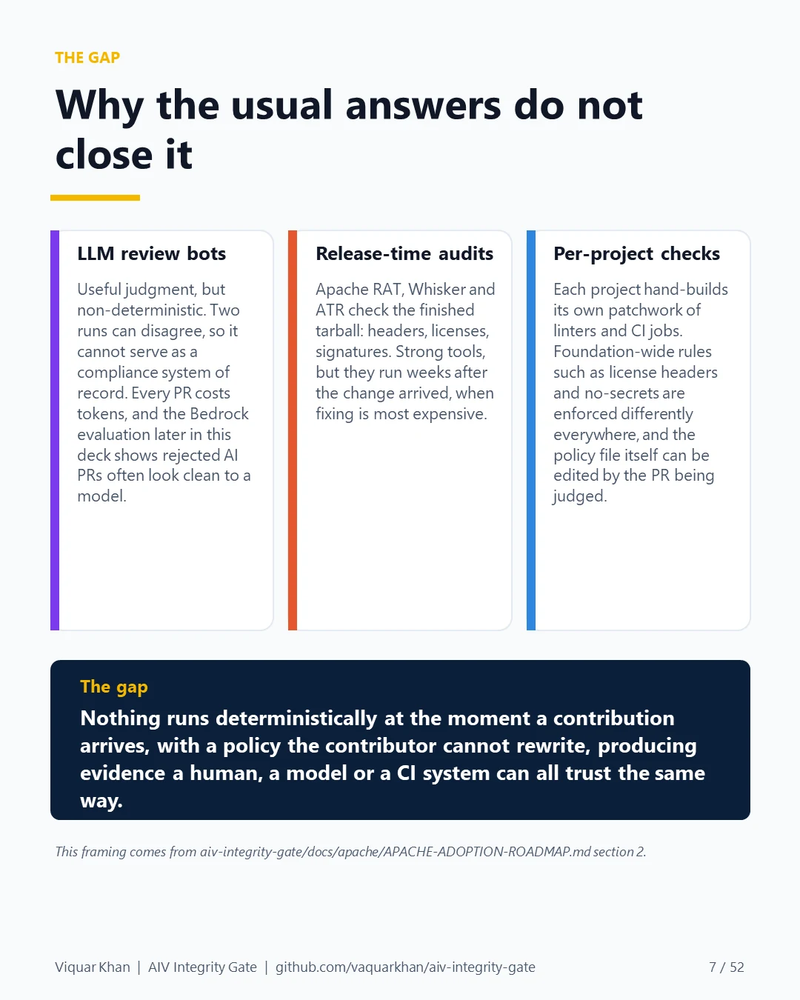
Slide 7 text
THE GAP
Why the usual answers do not close it
LLM review bots
Release-time audits
Per-project checks
Useful judgment, but non-deterministic. Two runs can disagree, so it cannot serve as a compliance system of record. Every PR costs tokens, and the Bedrock evaluation later in this deck shows rejected AI PRs often look clean to a model.
Apache RAT, Whisker and ATR check the finished tarball: headers, licenses, signatures. Strong tools, but they run weeks after the change arrived, when fixing is most expensive.
Each project hand-builds its own patchwork of linters and CI jobs. Foundation-wide rules such as license headers and no-secrets are enforced differently everywhere, and the policy file itself can be edited by the PR being judged.
The gap
Nothing runs deterministically at the moment a contribution arrives, with a policy the contributor cannot rewrite, producing evidence a human, a model or a CI system can all trust the same way.
This framing comes from aiv-integrity-gate/docs/apache/APACHE-ADOPTION-ROADMAP.md section 2.
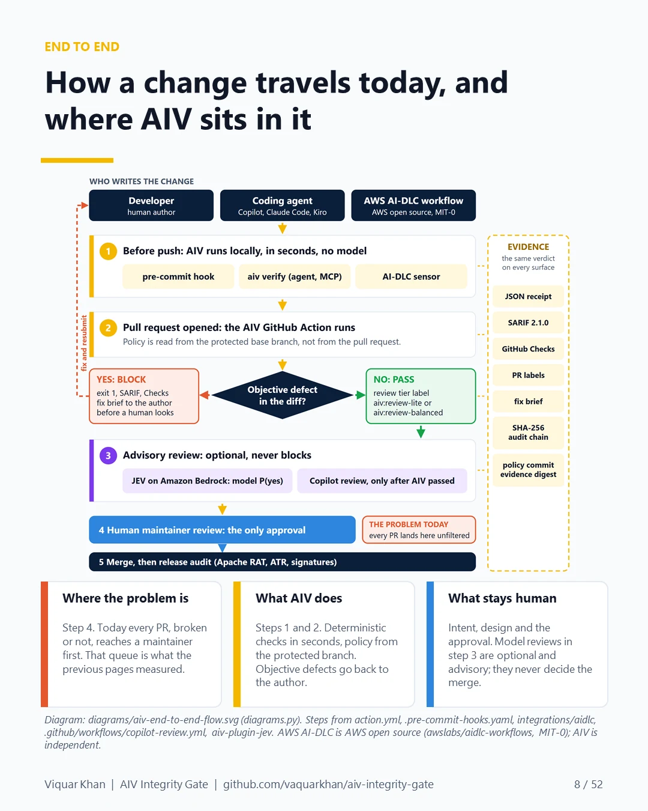
Slide 8 text
END TO END
How a change travels today, and where AIV sits in it
Where the problem is
What AIV does
What stays human
Step 4. Today every PR, broken or not, reaches a maintainer first. That queue is what the previous pages measured.
Steps 1 and 2. Deterministic checks in seconds, policy from the protected branch. Objective defects go back to the author.
Intent, design and the approval. Model reviews in step 3 are optional and advisory; they never decide the merge.
Diagram: diagrams/aiv-end-to-end-flow.svg (diagrams.py). Steps from action.yml, .pre-commit-hooks.yaml, integrations/aidlc, .github/workflows/copilot-review.yml, aiv-plugin-jev. AWS AI-DLC is AWS open source (awslabs/aidlc-workflows, MIT-0); AIV is independent.
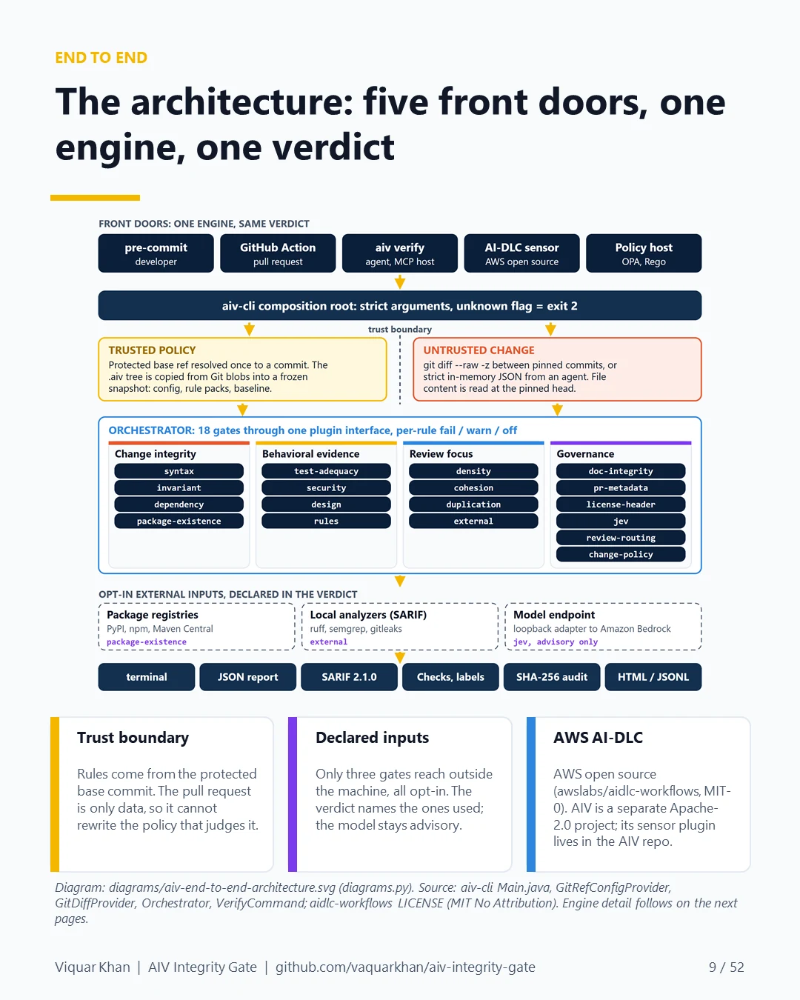
Slide 9 text
END TO END
The architecture: five front doors, one engine, one verdict
Trust boundary
Declared inputs
AWS AI-DLC
Rules come from the protected base commit. The pull request is only data, so it cannot rewrite the policy that judges it.
Only three gates reach outside the machine, all opt-in. The verdict names the ones used; the model stays advisory.
AWS open source (awslabs/aidlc-workflows, MIT-0). AIV is a separate Apache-2.0 project; its sensor plugin lives in the AIV repo.
Diagram: diagrams/aiv-end-to-end-architecture.svg (diagrams.py). Source: aiv-cli Main.java, GitRefConfigProvider, GitDiffProvider, Orchestrator, VerifyCommand; aidlc-workflows LICENSE (MIT No Attribution). Engine detail follows on the next pages.
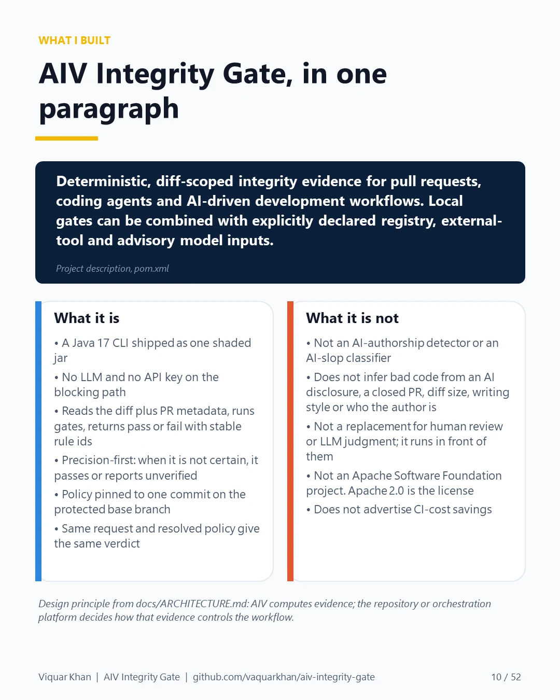
Slide 10 text
WHAT I BUILT
AIV Integrity Gate, in one paragraph
Deterministic, diff-scoped integrity evidence for pull requests, coding agents and AI-driven development workflows. Local gates can be combined with explicitly declared registry, external-tool and advisory model inputs.
Project description, pom.xml
What it is
What it is not
• A Java 17 CLI shipped as one shaded jar
• No LLM and no API key on the blocking path
• Reads the diff plus PR metadata, runs gates, returns pass or fail with stable rule ids
• Precision-first: when it is not certain, it passes or reports unverified
• Policy pinned to one commit on the protected base branch
• Same request and resolved policy give the same verdict
• Not an AI-authorship detector or an AI-slop classifier
• Does not infer bad code from an AI disclosure, a closed PR, diff size, writing style or who the author is
• Not a replacement for human review or LLM judgment; it runs in front of them
• Not an Apache Software Foundation project. Apache 2.0 is the license
• Does not advertise CI-cost savings
Design principle from docs/ARCHITECTURE.md: AIV computes evidence; the repository or orchestration platform decides how that evidence controls the workflow.
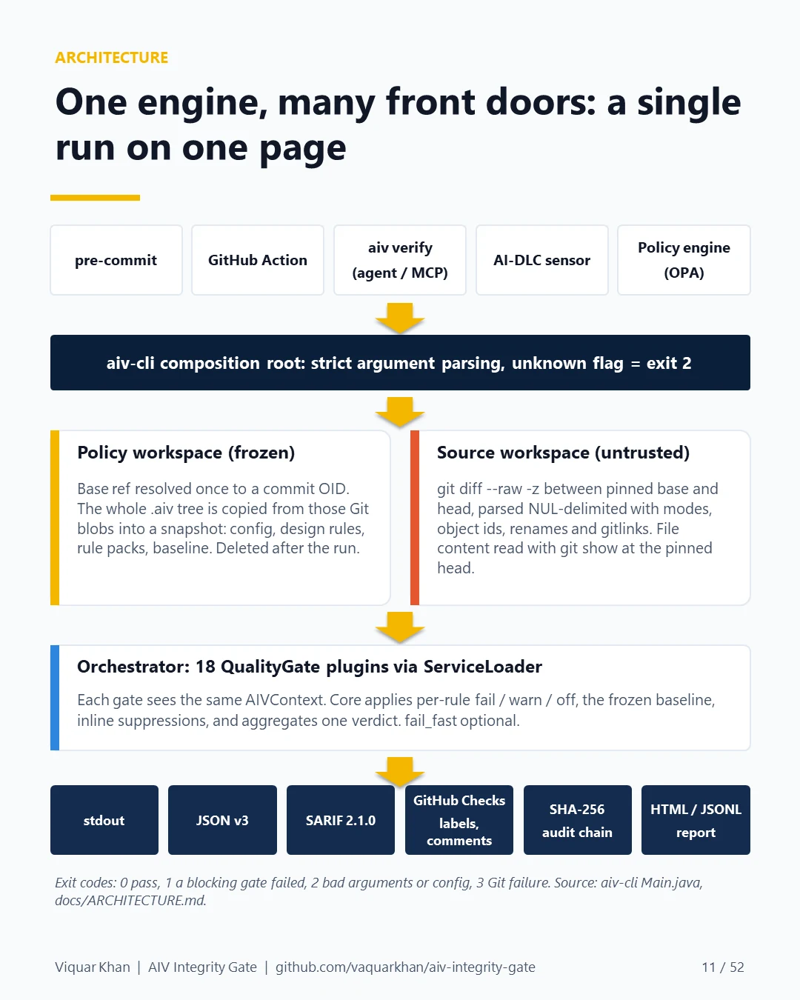
Slide 11 text
ARCHITECTURE
One engine, many front doors: a single run on one page
pre-commit
GitHub Action
aiv verify (agent / MCP)
AI-DLC sensor
Policy engine (OPA)
aiv-cli composition root: strict argument parsing, unknown flag = exit 2
Policy workspace (frozen)
Source workspace (untrusted)
Base ref resolved once to a commit OID. The whole .aiv tree is copied from those Git blobs into a snapshot: config, design rules, rule packs, baseline. Deleted after the run.
git diff --raw -z between pinned base and head, parsed NUL-delimited with modes, object ids, renames and gitlinks. File content read with git show at the pinned head.
Orchestrator: 18 QualityGate plugins via ServiceLoader
Each gate sees the same AIVContext. Core applies per-rule fail / warn / off, the frozen baseline, inline suppressions, and aggregates one verdict. fail_fast optional.
stdout
JSON v3
SARIF 2.1.0
GitHub Checks labels, comments
SHA-256 audit chain
HTML / JSONL report
Exit codes: 0 pass, 1 a blocking gate failed, 2 bad arguments or config, 3 Git failure. Source: aiv-cli Main.java, docs/ARCHITECTURE.md.
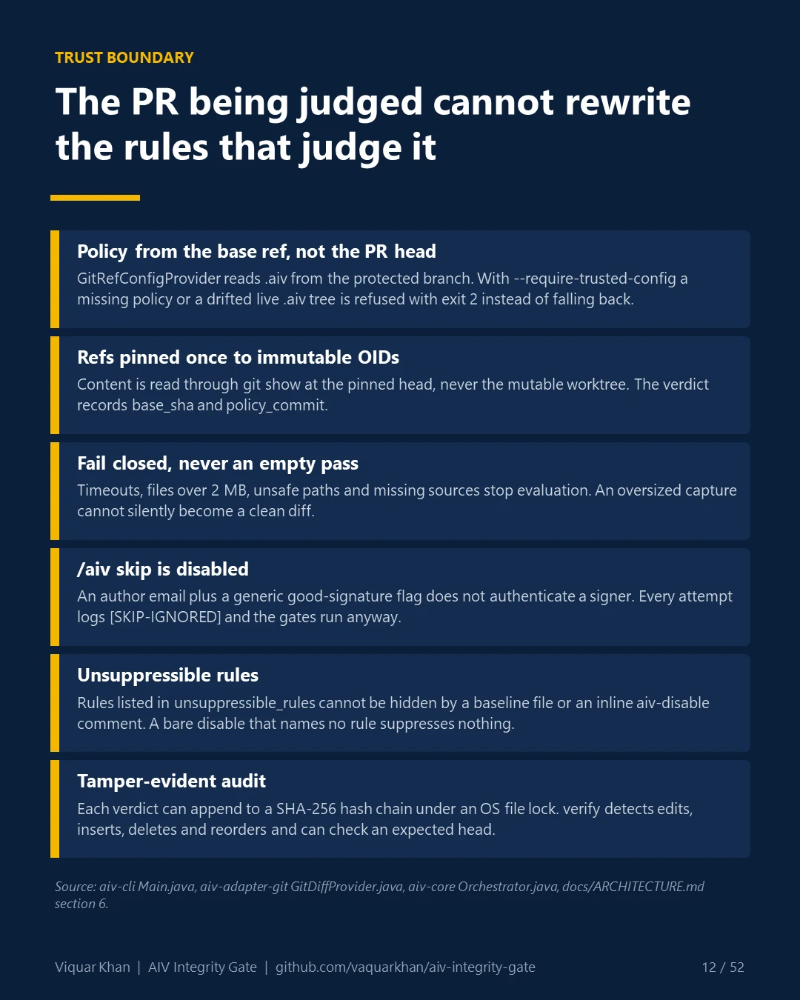
Slide 12 text
TRUST BOUNDARY
The PR being judged cannot rewrite the rules that judge it
Policy from the base ref, not the PR head
GitRefConfigProvider reads .aiv from the protected branch. With --require-trusted-config a missing policy or a drifted live .aiv tree is refused with exit 2 instead of falling back.
Refs pinned once to immutable OIDs
Content is read through git show at the pinned head, never the mutable worktree. The verdict records base_sha and policy_commit.
Fail closed, never an empty pass
Timeouts, files over 2 MB, unsafe paths and missing sources stop evaluation. An oversized capture cannot silently become a clean diff.
/aiv skip is disabled
An author email plus a generic good-signature flag does not authenticate a signer. Every attempt logs [SKIP-IGNORED] and the gates run anyway.
Unsuppressible rules
Rules listed in unsuppressible_rules cannot be hidden by a baseline file or an inline aiv-disable comment. A bare disable that names no rule suppresses nothing.
Tamper-evident audit
Each verdict can append to a SHA-256 hash chain under an OS file lock. verify detects edits, inserts, deletes and reorders and can check an expected head.
Source: aiv-cli Main.java, aiv-adapter-git GitDiffProvider.java, aiv-core Orchestrator.java, docs/ARCHITECTURE.md section 6.
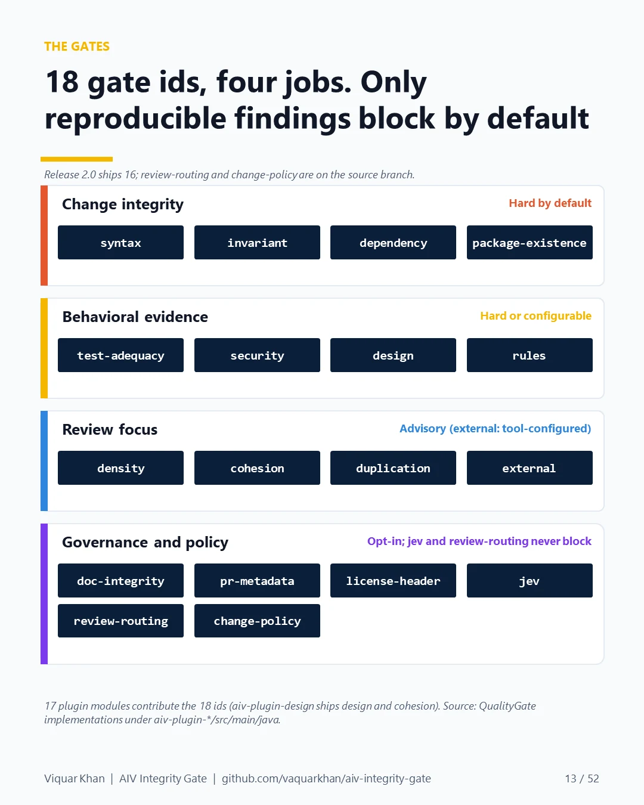
Slide 13 text
THE GATES
18 gate ids, four jobs. Only reproducible findings block by default
Release 2.0 ships 16; review-routing and change-policy are on the source branch.
Change integrity
Hard by default
syntax
invariant
dependency
package-existence
Behavioral evidence
Hard or configurable
test-adequacy
security
design
rules
Review focus
Advisory (external: tool-configured)
density
cohesion
duplication
external
Governance and policy
Opt-in; jev and review-routing never block
doc-integrity
pr-metadata
license-header
jev
review-routing
change-policy
17 plugin modules contribute the 18 ids (aiv-plugin-design ships design and cohesion). Source: QualityGate implementations under aiv-plugin-*/src/main/java.
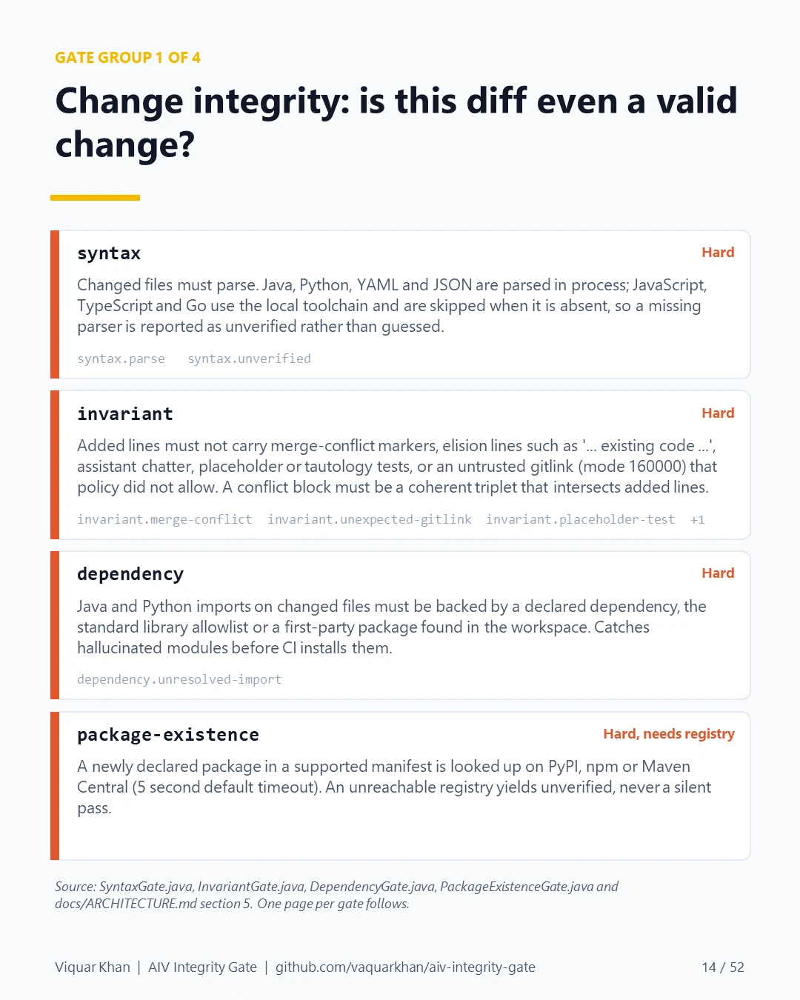
Slide 14 text
GATE GROUP 1 OF 4
Change integrity: is this diff even a valid change?
syntax
Hard
Changed files must parse. Java, Python, YAML and JSON are parsed in process; JavaScript, TypeScript and Go use the local toolchain and are skipped when it is absent, so a missing parser is reported as unverified rather than guessed.
syntax.parse syntax.unverified
invariant
Hard
Added lines must not carry merge-conflict markers, elision lines such as '... existing code ...', assistant chatter, placeholder or tautology tests, or an untrusted gitlink (mode 160000) that policy did not allow. A conflict block must be a coherent triplet that intersects added lines.
invariant.merge-conflict invariant.unexpected-gitlink invariant.placeholder-test +1
dependency
Hard
Java and Python imports on changed files must be backed by a declared dependency, the standard library allowlist or a first-party package found in the workspace. Catches hallucinated modules before CI installs them.
dependency.unresolved-import
package-existence
Hard, needs registry
A newly declared package in a supported manifest is looked up on PyPI, npm or Maven Central (5 second default timeout). An unreachable registry yields unverified, never a silent pass.
Source: SyntaxGate.java, InvariantGate.java, DependencyGate.java, PackageExistenceGate.java and docs/ARCHITECTURE.md section 5. One page per gate follows.
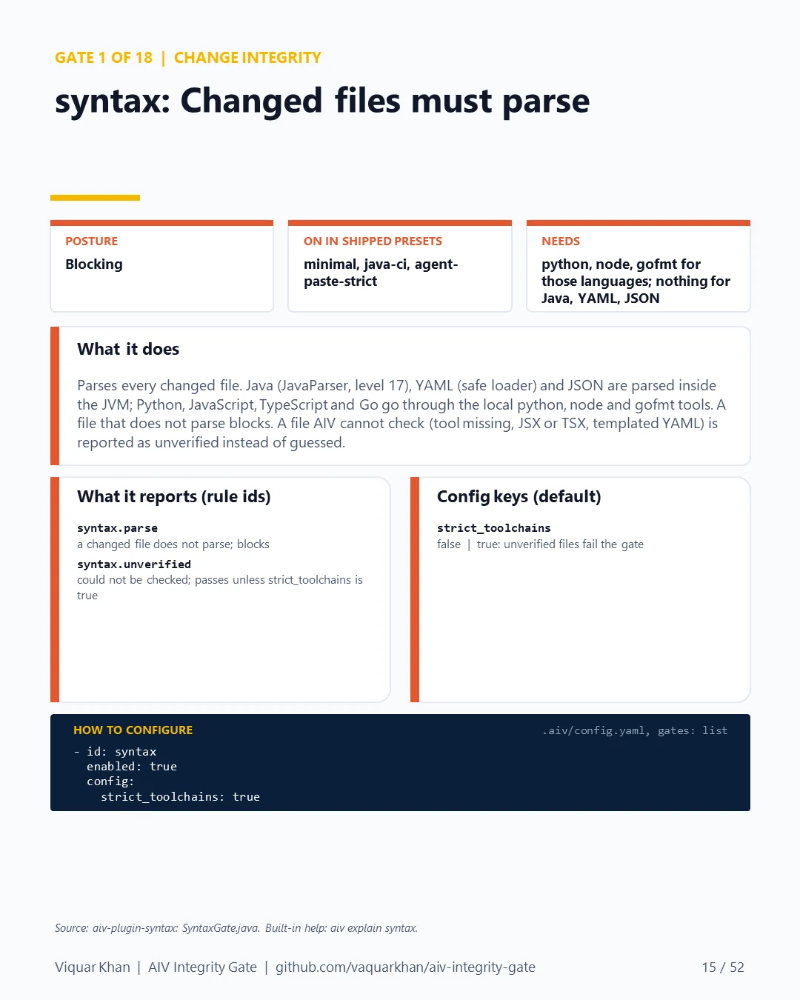
Slide 15 text
GATE 1 OF 18 | CHANGE INTEGRITY
syntax: Changed files must parse
POSTURE
ON IN SHIPPED PRESETS
NEEDS
Blocking
minimal, java-ci, agent-paste-strict
python, node, gofmt for those languages; nothing for Java, YAML, JSON
What it does
Parses every changed file. Java (JavaParser, level 17), YAML (safe loader) and JSON are parsed inside the JVM; Python, JavaScript, TypeScript and Go go through the local python, node and gofmt tools. A file that does not parse blocks. A file AIV cannot check (tool missing, JSX or TSX, templated YAML) is reported as unverified instead of guessed.
What it reports (rule ids)
Config keys (default)
syntax.parse
strict_toolchains
a changed file does not parse; blocks
false | true: unverified files fail the gate
syntax.unverified
could not be checked; passes unless strict_toolchains is true
HOW TO CONFIGURE
.aiv/config.yaml, gates: list
- id: syntax
enabled: true
config:
strict_toolchains: true
Source: aiv-plugin-syntax: SyntaxGate.java. Built-in help: aiv explain syntax.
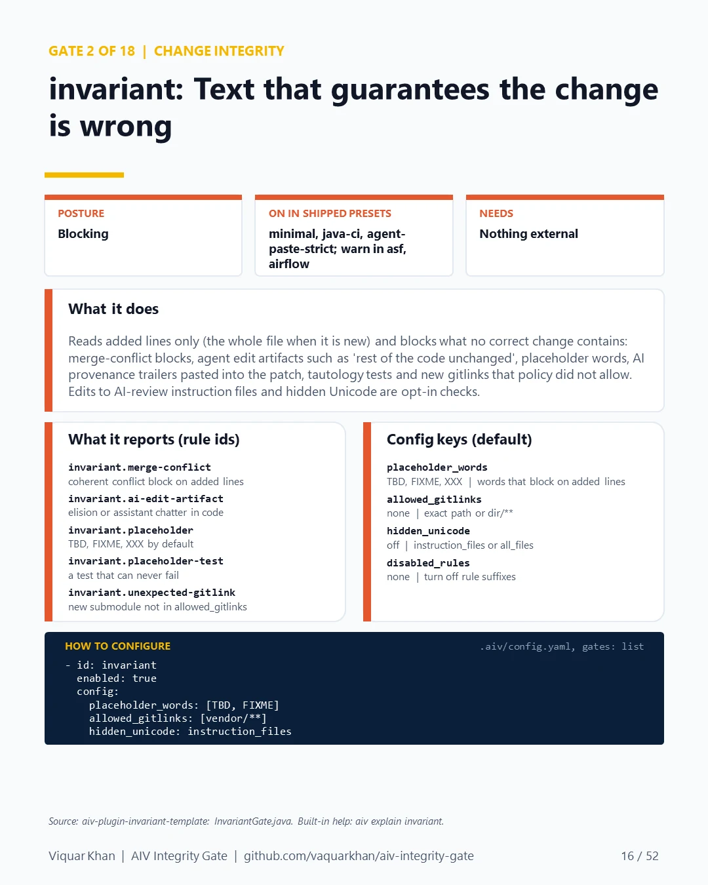
Slide 16 text
GATE 2 OF 18 | CHANGE INTEGRITY
invariant: Text that guarantees the change is wrong
POSTURE
ON IN SHIPPED PRESETS
NEEDS
Blocking
minimal, java-ci, agent-paste-strict; warn in asf, airflow
Nothing external
What it does
Reads added lines only (the whole file when it is new) and blocks what no correct change contains: merge-conflict blocks, agent edit artifacts such as 'rest of the code unchanged', placeholder words, AI provenance trailers pasted into the patch, tautology tests and new gitlinks that policy did not allow. Edits to AI-review instruction files and hidden Unicode are opt-in checks.
What it reports (rule ids)
Config keys (default)
invariant.merge-conflict
placeholder_words
coherent conflict block on added lines
TBD, FIXME, XXX | words that block on added lines
invariant.ai-edit-artifact
allowed_gitlinks
elision or assistant chatter in code
none | exact path or dir/**
invariant.placeholder
hidden_unicode
TBD, FIXME, XXX by default
off | instruction_files or all_files
invariant.placeholder-test
disabled_rules
a test that can never fail
none | turn off rule suffixes
invariant.unexpected-gitlink
new submodule not in allowed_gitlinks
HOW TO CONFIGURE
.aiv/config.yaml, gates: list
- id: invariant
enabled: true
config:
placeholder_words: [TBD, FIXME]
allowed_gitlinks: [vendor/**]
hidden_unicode: instruction_files
Source: aiv-plugin-invariant-template: InvariantGate.java. Built-in help: aiv explain invariant.
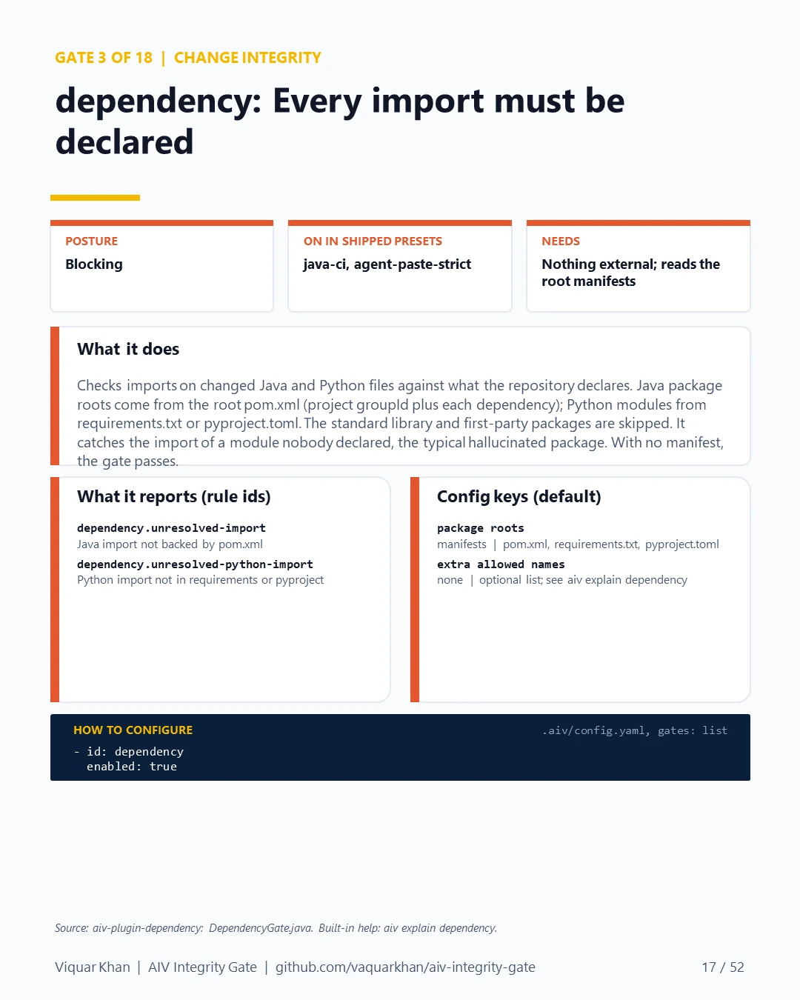
Slide 17 text
GATE 3 OF 18 | CHANGE INTEGRITY
dependency: Every import must be declared
POSTURE
ON IN SHIPPED PRESETS
NEEDS
Blocking
java-ci, agent-paste-strict
Nothing external; reads the root manifests
What it does
Checks imports on changed Java and Python files against what the repository declares. Java package roots come from the root pom.xml (project groupId plus each dependency); Python modules from requirements.txt or pyproject.toml. The standard library and first-party packages are skipped. It catches the import of a module nobody declared, the typical hallucinated package. With no manifest, the gate passes.
What it reports (rule ids)
Config keys (default)
dependency.unresolved-import
package roots
Java import not backed by pom.xml
manifests | pom.xml, requirements.txt, pyproject.toml
dependency.unresolved-python-import
extra allowed names
Python import not in requirements or pyproject
none | optional list; see aiv explain dependency
HOW TO CONFIGURE
.aiv/config.yaml, gates: list
- id: dependency
enabled: true
Source: aiv-plugin-dependency: DependencyGate.java. Built-in help: aiv explain dependency.
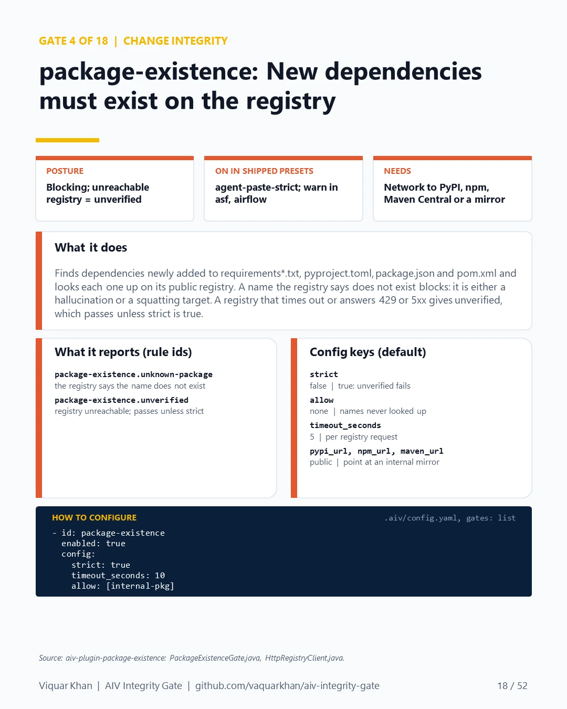
Slide 18 text
GATE 4 OF 18 | CHANGE INTEGRITY
package-existence: New dependencies must exist on the registry
POSTURE
ON IN SHIPPED PRESETS
NEEDS
Blocking; unreachable registry = unverified
agent-paste-strict; warn in asf, airflow
Network to PyPI, npm, Maven Central or a mirror
What it does
Finds dependencies newly added to requirements*.txt, pyproject.toml, package.json and pom.xml and looks each one up on its public registry. A name the registry says does not exist blocks: it is either a hallucination or a squatting target. A registry that times out or answers 429 or 5xx gives unverified, which passes unless strict is true.
What it reports (rule ids)
Config keys (default)
package-existence.unknown-package
strict
the registry says the name does not exist
false | true: unverified fails
package-existence.unverified
allow
registry unreachable; passes unless strict
none | names never looked up
timeout_seconds
5 | per registry request
pypi_url, npm_url, maven_url
public | point at an internal mirror
HOW TO CONFIGURE
.aiv/config.yaml, gates: list
- id: package-existence
enabled: true
config:
strict: true
timeout_seconds: 10
allow: [internal-pkg]
Source: aiv-plugin-package-existence: PackageExistenceGate.java, HttpRegistryClient.java.
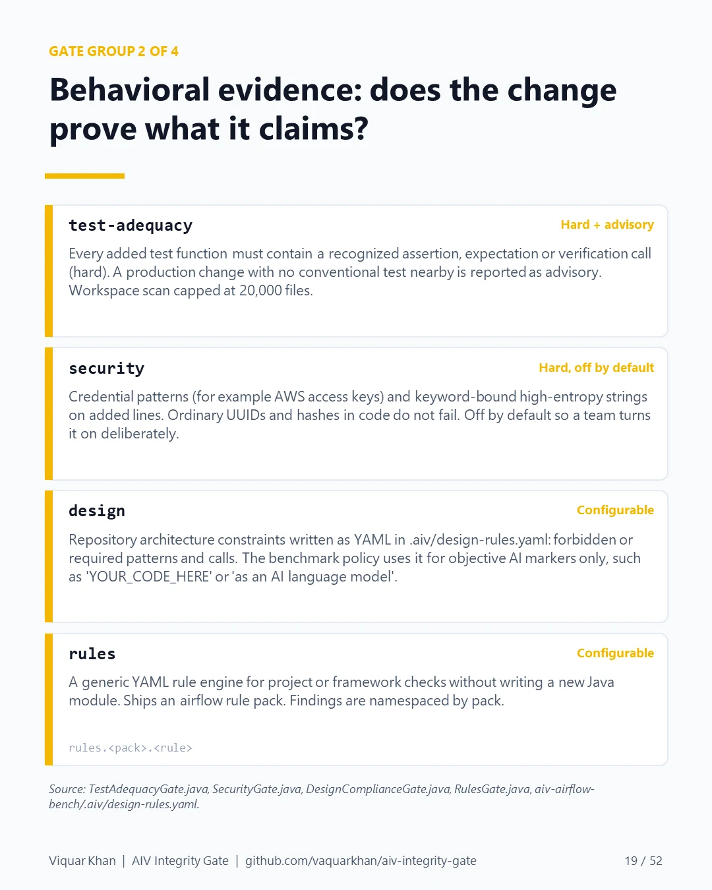
Slide 19 text
GATE GROUP 2 OF 4
Behavioral evidence: does the change prove what it claims?
test-adequacy
Hard + advisory
Every added test function must contain a recognized assertion, expectation or verification call (hard). A production change with no conventional test nearby is reported as advisory. Workspace scan capped at 20,000 files.
security
Hard, off by default
Credential patterns (for example AWS access keys) and keyword-bound high-entropy strings on added lines. Ordinary UUIDs and hashes in code do not fail. Off by default so a team turns it on deliberately.
design
Configurable
Repository architecture constraints written as YAML in .aiv/design-rules.yaml: forbidden or required patterns and calls. The benchmark policy uses it for objective AI markers only, such as 'YOUR_CODE_HERE' or 'as an AI language model'.
rules
Configurable
A generic YAML rule engine for project or framework checks without writing a new Java module. Ships an airflow rule pack. Findings are namespaced by pack.
rules.<pack>.<rule>
Source: TestAdequacyGate.java, SecurityGate.java, DesignComplianceGate.java, RulesGate.java, aiv-airflow-bench/.aiv/design-rules.yaml.
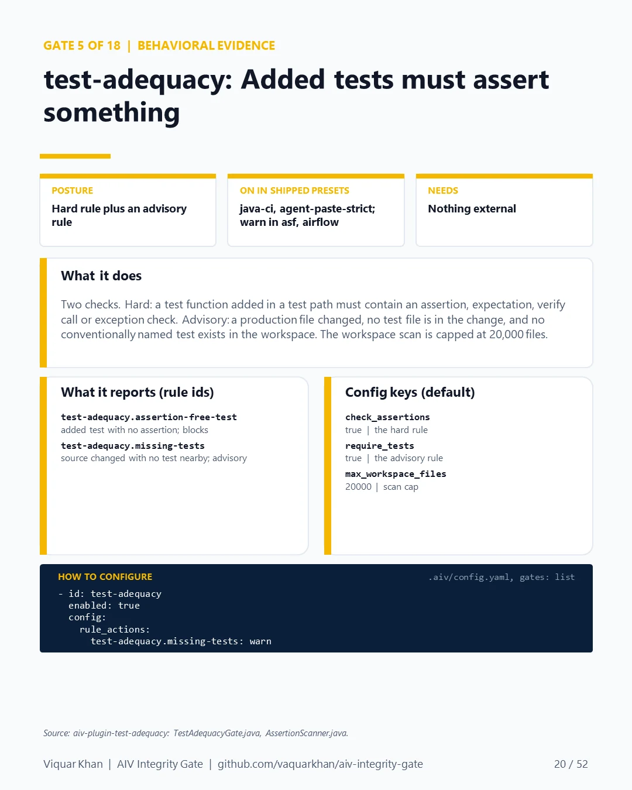
Slide 20 text
GATE 5 OF 18 | BEHAVIORAL EVIDENCE
test-adequacy: Added tests must assert something
POSTURE
ON IN SHIPPED PRESETS
NEEDS
Hard rule plus an advisory rule
java-ci, agent-paste-strict; warn in asf, airflow
Nothing external
What it does
Two checks. Hard: a test function added in a test path must contain an assertion, expectation, verify call or exception check. Advisory: a production file changed, no test file is in the change, and no conventionally named test exists in the workspace. The workspace scan is capped at 20,000 files.
What it reports (rule ids)
Config keys (default)
test-adequacy.assertion-free-test
check_assertions
added test with no assertion; blocks
true | the hard rule
test-adequacy.missing-tests
require_tests
source changed with no test nearby; advisory
true | the advisory rule
max_workspace_files
20000 | scan cap
HOW TO CONFIGURE
.aiv/config.yaml, gates: list
- id: test-adequacy
enabled: true
config:
rule_actions:
test-adequacy.missing-tests: warn
Source: aiv-plugin-test-adequacy: TestAdequacyGate.java, AssertionScanner.java.
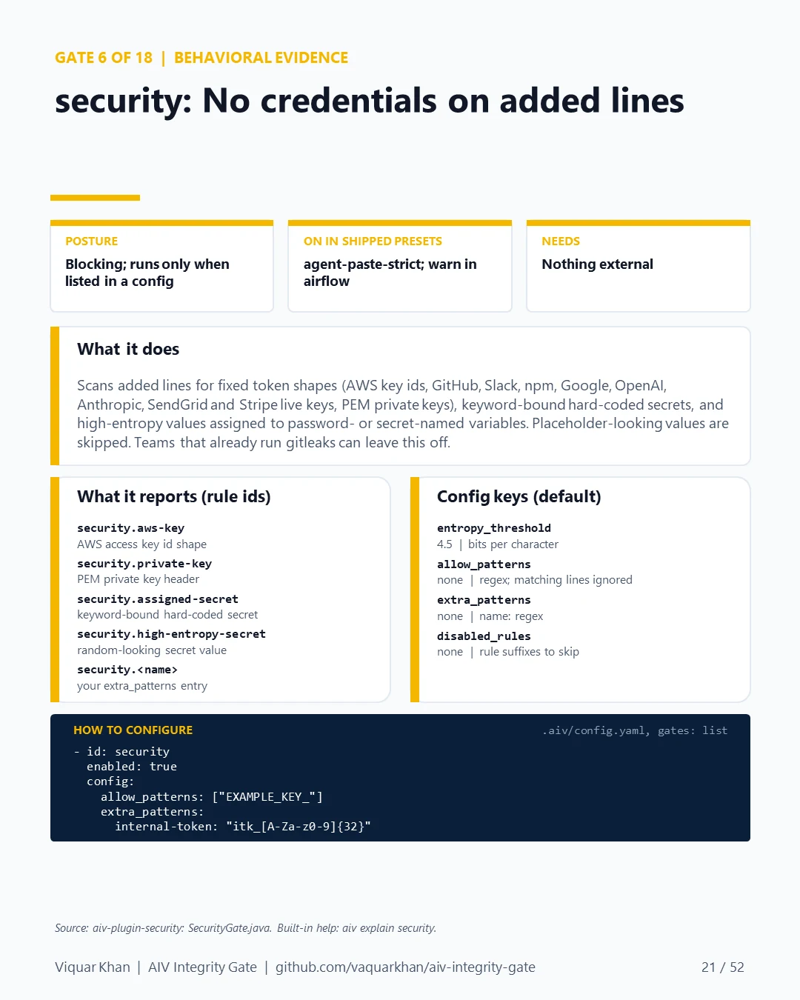
Slide 21 text
GATE 6 OF 18 | BEHAVIORAL EVIDENCE
security: No credentials on added lines
POSTURE
ON IN SHIPPED PRESETS
NEEDS
Blocking; runs only when listed in a config
agent-paste-strict; warn in airflow
Nothing external
What it does
Scans added lines for fixed token shapes (AWS key ids, GitHub, Slack, npm, Google, OpenAI, Anthropic, SendGrid and Stripe live keys, PEM private keys), keyword-bound hard-coded secrets, and high-entropy values assigned to password- or secret-named variables. Placeholder-looking values are skipped. Teams that already run gitleaks can leave this off.
What it reports (rule ids)
Config keys (default)
security.aws-key
entropy_threshold
AWS access key id shape
4.5 | bits per character
security.private-key
allow_patterns
PEM private key header
none | regex; matching lines ignored
security.assigned-secret
extra_patterns
keyword-bound hard-coded secret
none | name: regex
security.high-entropy-secret
disabled_rules
random-looking secret value
none | rule suffixes to skip
security.<name>
your extra_patterns entry
HOW TO CONFIGURE
.aiv/config.yaml, gates: list
- id: security
enabled: true
config:
allow_patterns: ["EXAMPLE_KEY_"]
extra_patterns:
internal-token: "itk_[A-Za-z0-9]{32}"
Source: aiv-plugin-security: SecurityGate.java. Built-in help: aiv explain security.
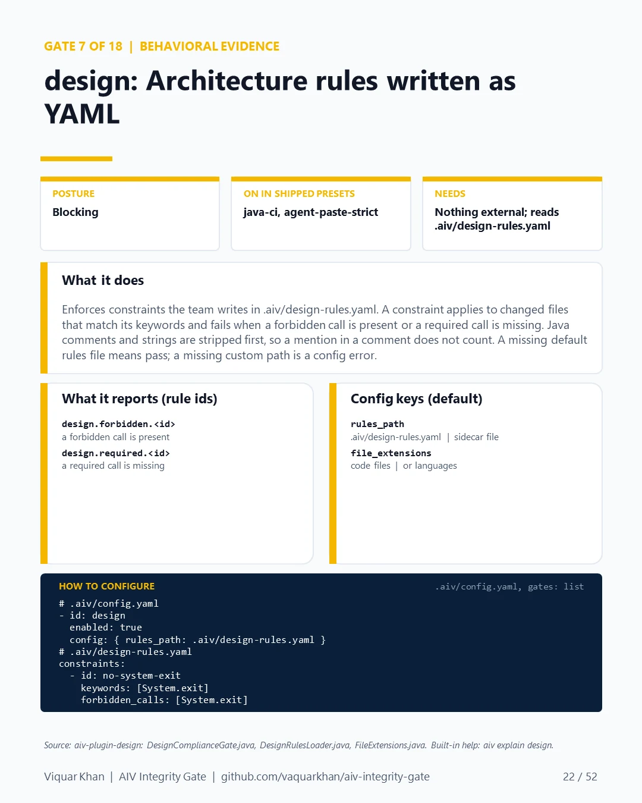
Slide 22 text
GATE 7 OF 18 | BEHAVIORAL EVIDENCE
design: Architecture rules written as YAML
POSTURE
ON IN SHIPPED PRESETS
NEEDS
Blocking
java-ci, agent-paste-strict
Nothing external; reads .aiv/design-rules.yaml
What it does
Enforces constraints the team writes in .aiv/design-rules.yaml. A constraint applies to changed files that match its keywords and fails when a forbidden call is present or a required call is missing. Java comments and strings are stripped first, so a mention in a comment does not count. A missing default rules file means pass; a missing custom path is a config error.
What it reports (rule ids)
Config keys (default)
design.forbidden.<id>
rules_path
a forbidden call is present
.aiv/design-rules.yaml | sidecar file
design.required.<id>
file_extensions
a required call is missing
code files | or languages
HOW TO CONFIGURE
.aiv/config.yaml, gates: list
# .aiv/config.yaml
- id: design
enabled: true
config: { rules_path: .aiv/design-rules.yaml }
# .aiv/design-rules.yaml
constraints:
- id: no-system-exit
keywords: [System.exit]
forbidden_calls: [System.exit]
Source: aiv-plugin-design: DesignComplianceGate.java, DesignRulesLoader.java, FileExtensions.java. Built-in help: aiv explain design.
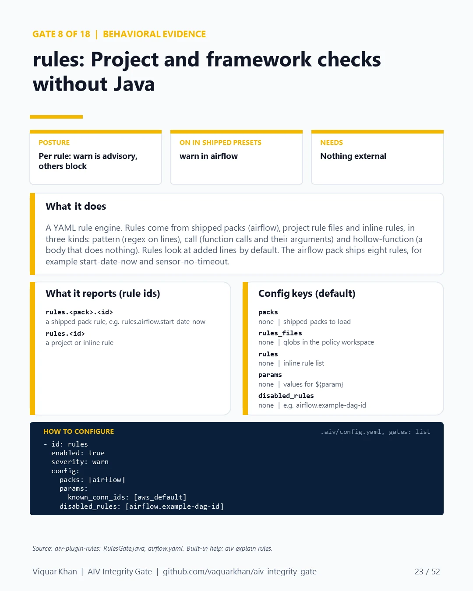
Slide 23 text
GATE 8 OF 18 | BEHAVIORAL EVIDENCE
rules: Project and framework checks without Java
POSTURE
ON IN SHIPPED PRESETS
NEEDS
Per rule: warn is advisory, others block
warn in airflow
Nothing external
What it does
A YAML rule engine. Rules come from shipped packs (airflow), project rule files and inline rules, in three kinds: pattern (regex on lines), call (function calls and their arguments) and hollow-function (a body that does nothing). Rules look at added lines by default. The airflow pack ships eight rules, for example start-date-now and sensor-no-timeout.
What it reports (rule ids)
Config keys (default)
rules.<pack>.<id>
packs
a shipped pack rule, e.g. rules.airflow.start-date-now
none | shipped packs to load
rules_files
rules.<id>
none | globs in the policy workspace
a project or inline rule
rules
none | inline rule list
params
none | values for ${param}
disabled_rules
none | e.g. airflow.example-dag-id
HOW TO CONFIGURE
.aiv/config.yaml, gates: list
- id: rules
enabled: true
severity: warn
config:
packs: [airflow]
params:
known_conn_ids: [aws_default]
disabled_rules: [airflow.example-dag-id]
Source: aiv-plugin-rules: RulesGate.java, airflow.yaml. Built-in help: aiv explain rules.
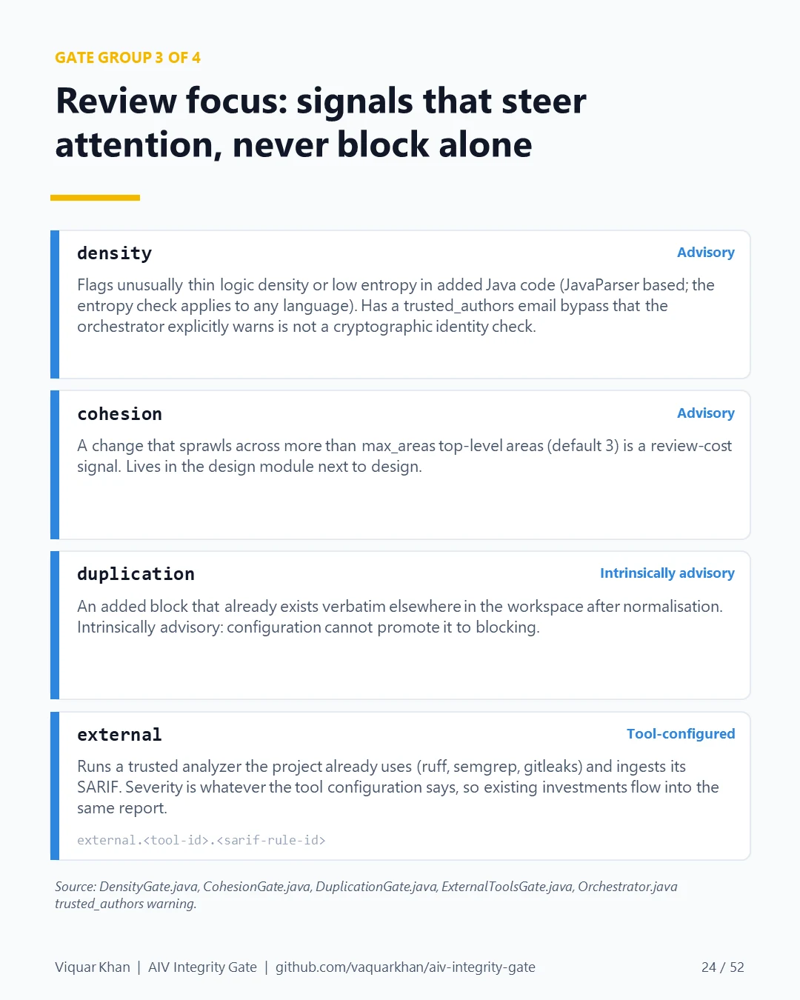
Slide 24 text
GATE GROUP 3 OF 4
Review focus: signals that steer attention, never block alone
density
Advisory
Flags unusually thin logic density or low entropy in added Java code (JavaParser based; the entropy check applies to any language). Has a trusted_authors email bypass that the orchestrator explicitly warns is not a cryptographic identity check.
cohesion
Advisory
A change that sprawls across more than max_areas top-level areas (default 3) is a review-cost signal. Lives in the design module next to design.
duplication
Intrinsically advisory
An added block that already exists verbatim elsewhere in the workspace after normalisation. Intrinsically advisory: configuration cannot promote it to blocking.
external
Tool-configured
Runs a trusted analyzer the project already uses (ruff, semgrep, gitleaks) and ingests its SARIF. Severity is whatever the tool configuration says, so existing investments flow into the same report.
external.<tool-id>.<sarif-rule-id>
Source: DensityGate.java, CohesionGate.java, DuplicationGate.java, ExternalToolsGate.java, Orchestrator.java trusted_authors warning.
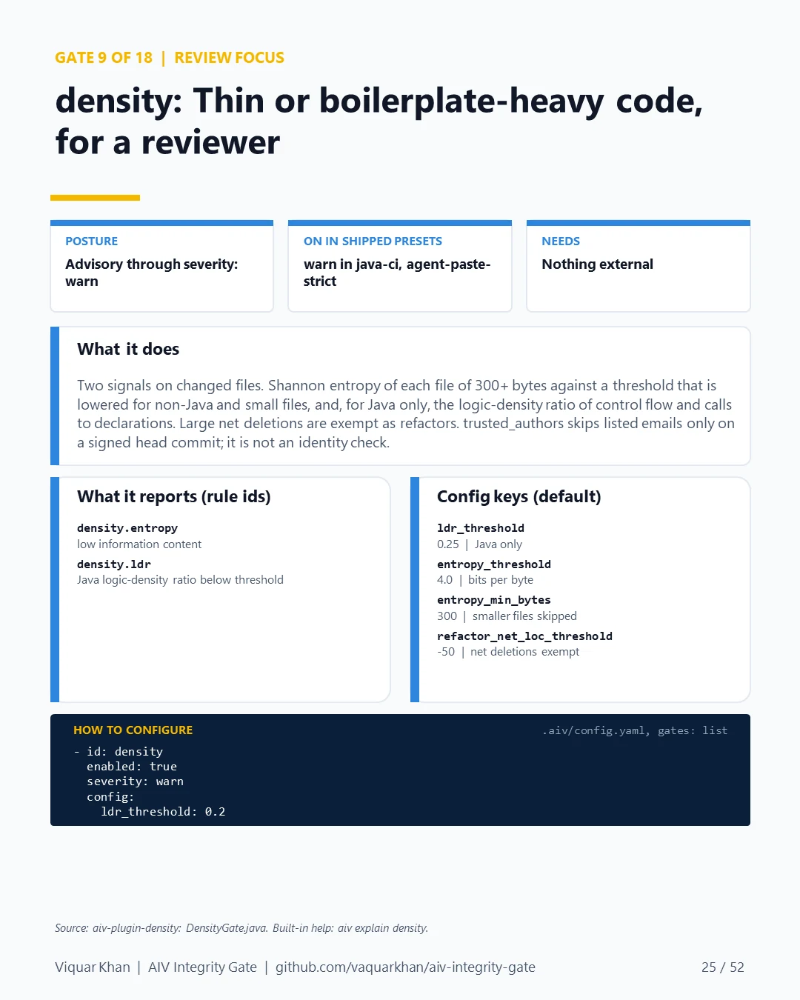
Slide 25 text
GATE 9 OF 18 | REVIEW FOCUS
density: Thin or boilerplate-heavy code, for a reviewer
POSTURE
ON IN SHIPPED PRESETS
NEEDS
Advisory through severity: warn
warn in java-ci, agent-paste-strict
Nothing external
What it does
Two signals on changed files. Shannon entropy of each file of 300+ bytes against a threshold that is lowered for non-Java and small files, and, for Java only, the logic-density ratio of control flow and calls to declarations. Large net deletions are exempt as refactors. trusted_authors skips listed emails only on a signed head commit; it is not an identity check.
What it reports (rule ids)
Config keys (default)
density.entropy
ldr_threshold
low information content
0.25 | Java only
density.ldr
entropy_threshold
Java logic-density ratio below threshold
4.0 | bits per byte
entropy_min_bytes
300 | smaller files skipped
refactor_net_loc_threshold
-50 | net deletions exempt
HOW TO CONFIGURE
.aiv/config.yaml, gates: list
- id: density
enabled: true
severity: warn
config:
ldr_threshold: 0.2
Source: aiv-plugin-density: DensityGate.java. Built-in help: aiv explain density.
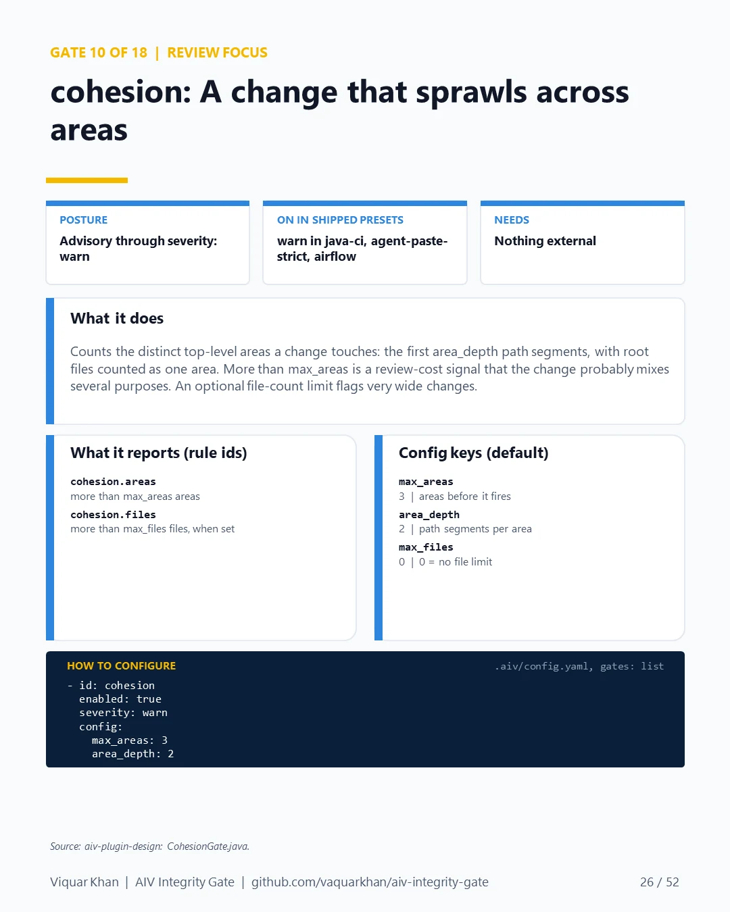
Slide 26 text
GATE 10 OF 18 | REVIEW FOCUS
cohesion: A change that sprawls across areas
POSTURE
ON IN SHIPPED PRESETS
NEEDS
Advisory through severity: warn
warn in java-ci, agent-paste-strict, airflow
Nothing external
What it does
Counts the distinct top-level areas a change touches: the first area_depth path segments, with root files counted as one area. More than max_areas is a review-cost signal that the change probably mixes several purposes. An optional file-count limit flags very wide changes.
What it reports (rule ids)
Config keys (default)
cohesion.areas
max_areas
more than max_areas areas
3 | areas before it fires
cohesion.files
area_depth
more than max_files files, when set
2 | path segments per area
max_files
0 | 0 = no file limit
HOW TO CONFIGURE
.aiv/config.yaml, gates: list
- id: cohesion
enabled: true
severity: warn
config:
max_areas: 3
area_depth: 2
Source: aiv-plugin-design: CohesionGate.java.
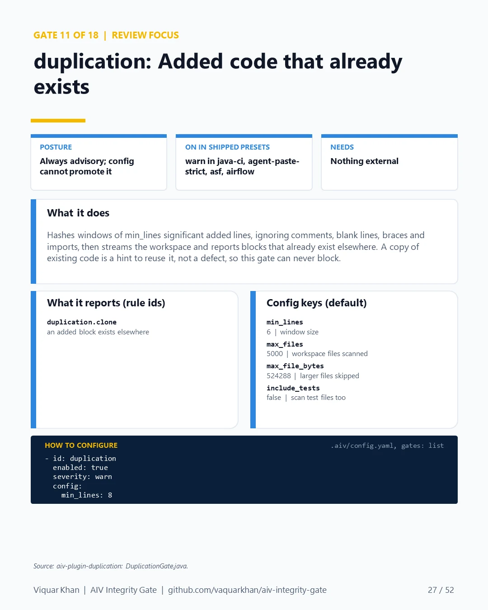
Slide 27 text
GATE 11 OF 18 | REVIEW FOCUS
duplication: Added code that already exists
POSTURE
ON IN SHIPPED PRESETS
NEEDS
Always advisory; config cannot promote it
warn in java-ci, agent-paste-strict, asf, airflow
Nothing external
What it does
Hashes windows of min_lines significant added lines, ignoring comments, blank lines, braces and imports, then streams the workspace and reports blocks that already exist elsewhere. A copy of existing code is a hint to reuse it, not a defect, so this gate can never block.
What it reports (rule ids)
Config keys (default)
duplication.clone
min_lines
an added block exists elsewhere
6 | window size
max_files
5000 | workspace files scanned
max_file_bytes
524288 | larger files skipped
include_tests
false | scan test files too
HOW TO CONFIGURE
.aiv/config.yaml, gates: list
- id: duplication
enabled: true
severity: warn
config:
min_lines: 8
Source: aiv-plugin-duplication: DuplicationGate.java.
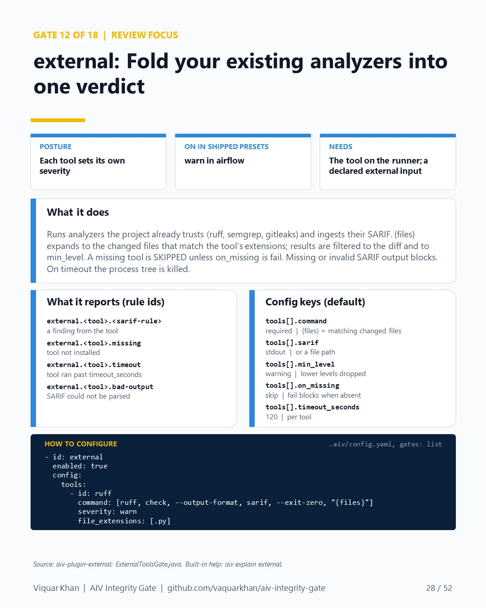
Slide 28 text
GATE 12 OF 18 | REVIEW FOCUS
external: Fold your existing analyzers into one verdict
POSTURE
ON IN SHIPPED PRESETS
NEEDS
Each tool sets its own severity
warn in airflow
The tool on the runner; a declared external input
What it does
Runs analyzers the project already trusts (ruff, semgrep, gitleaks) and ingests their SARIF. {files} expands to the changed files that match the tool's extensions; results are filtered to the diff and to min_level. A missing tool is SKIPPED unless on_missing is fail. Missing or invalid SARIF output blocks. On timeout the process tree is killed.
What it reports (rule ids)
Config keys (default)
external.<tool>.<sarif-rule>
tools[].command
a finding from the tool
required | {files} = matching changed files
tools[].sarif
external.<tool>.missing
stdout | or a file path
tool not installed
tools[].min_level
external.<tool>.timeout
warning | lower levels dropped
tool ran past timeout_seconds
tools[].on_missing
external.<tool>.bad-output
skip | fail blocks when absent
SARIF could not be parsed
tools[].timeout_seconds
120 | per tool
HOW TO CONFIGURE
.aiv/config.yaml, gates: list
- id: external
enabled: true
config:
tools:
- id: ruff
command: [ruff, check, --output-format, sarif, --exit-zero, "{files}"]
severity: warn
file_extensions: [.py]
Source: aiv-plugin-external: ExternalToolsGate.java. Built-in help: aiv explain external.
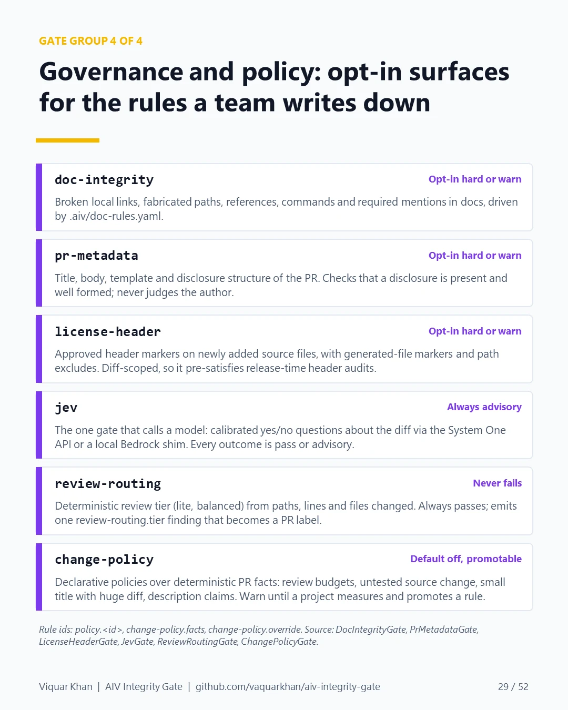
Slide 29 text
GATE GROUP 4 OF 4
Governance and policy: opt-in surfaces for the rules a team writes down
doc-integrity
Opt-in hard or warn
Broken local links, fabricated paths, references, commands and required mentions in docs, driven by .aiv/doc-rules.yaml.
pr-metadata
Opt-in hard or warn
Title, body, template and disclosure structure of the PR. Checks that a disclosure is present and well formed; never judges the author.
license-header
Opt-in hard or warn
Approved header markers on newly added source files, with generated-file markers and path excludes. Diff-scoped, so it pre-satisfies release-time header audits.
jev
Always advisory
The one gate that calls a model: calibrated yes/no questions about the diff via the System One API or a local Bedrock shim. Every outcome is pass or advisory.
review-routing
Never fails
Deterministic review tier (lite, balanced) from paths, lines and files changed. Always passes; emits one review-routing.tier finding that becomes a PR label.
change-policy
Default off, promotable
Declarative policies over deterministic PR facts: review budgets, untested source change, small title with huge diff, description claims. Warn until a project measures and promotes a rule.
Rule ids: policy.<id>, change-policy.facts, change-policy.override. Source: DocIntegrityGate, PrMetadataGate, LicenseHeaderGate, JevGate, ReviewRoutingGate, ChangePolicyGate.
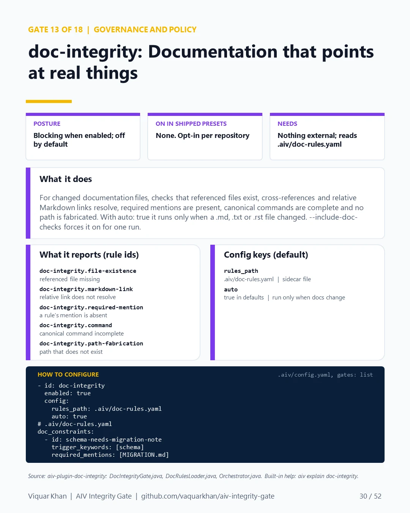
Slide 30 text
GATE 13 OF 18 | GOVERNANCE AND POLICY
doc-integrity: Documentation that points at real things
POSTURE
ON IN SHIPPED PRESETS
NEEDS
Blocking when enabled; off by default
None. Opt-in per repository
Nothing external; reads .aiv/doc-rules.yaml
What it does
For changed documentation files, checks that referenced files exist, cross-references and relative Markdown links resolve, required mentions are present, canonical commands are complete and no path is fabricated. With auto: true it runs only when a .md, .txt or .rst file changed. --include-doc-checks forces it on for one run.
What it reports (rule ids)
Config keys (default)
doc-integrity.file-existence
rules_path
referenced file missing
.aiv/doc-rules.yaml | sidecar file
doc-integrity.markdown-link
auto
relative link does not resolve
true in defaults | run only when docs change
doc-integrity.required-mention
a rule's mention is absent
doc-integrity.command
canonical command incomplete
doc-integrity.path-fabrication
path that does not exist
HOW TO CONFIGURE
.aiv/config.yaml, gates: list
- id: doc-integrity
enabled: true
config:
rules_path: .aiv/doc-rules.yaml
auto: true
# .aiv/doc-rules.yaml
doc_constraints:
- id: schema-needs-migration-note
trigger_keywords: [schema]
required_mentions: [MIGRATION.md]
Source: aiv-plugin-doc-integrity: DocIntegrityGate.java, DocRulesLoader.java, Orchestrator.java. Built-in help: aiv explain doc-integrity.
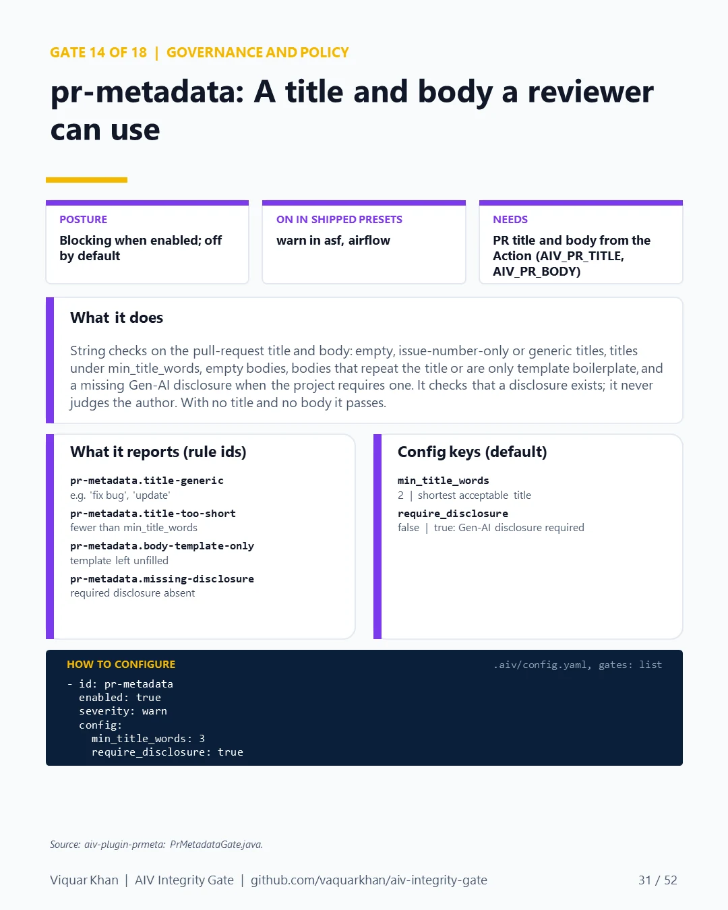
Slide 31 text
GATE 14 OF 18 | GOVERNANCE AND POLICY
pr-metadata: A title and body a reviewer can use
POSTURE
ON IN SHIPPED PRESETS
NEEDS
Blocking when enabled; off by default
warn in asf, airflow
PR title and body from the Action (AIV_PR_TITLE, AIV_PR_BODY)
What it does
String checks on the pull-request title and body: empty, issue-number-only or generic titles, titles under min_title_words, empty bodies, bodies that repeat the title or are only template boilerplate, and a missing Gen-AI disclosure when the project requires one. It checks that a disclosure exists; it never judges the author. With no title and no body it passes.
What it reports (rule ids)
Config keys (default)
pr-metadata.title-generic
min_title_words
e.g. 'fix bug', 'update'
2 | shortest acceptable title
pr-metadata.title-too-short
require_disclosure
fewer than min_title_words
false | true: Gen-AI disclosure required
pr-metadata.body-template-only
template left unfilled
pr-metadata.missing-disclosure
required disclosure absent
HOW TO CONFIGURE
.aiv/config.yaml, gates: list
- id: pr-metadata
enabled: true
severity: warn
config:
min_title_words: 3
require_disclosure: true
Source: aiv-plugin-prmeta: PrMetadataGate.java.
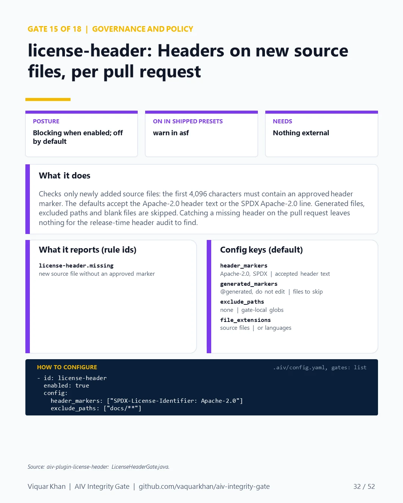
Slide 32 text
GATE 15 OF 18 | GOVERNANCE AND POLICY
license-header: Headers on new source files, per pull request
POSTURE
ON IN SHIPPED PRESETS
NEEDS
Blocking when enabled; off by default
warn in asf
Nothing external
What it does
Checks only newly added source files: the first 4,096 characters must contain an approved header marker. The defaults accept the Apache-2.0 header text or the SPDX Apache-2.0 line. Generated files, excluded paths and blank files are skipped. Catching a missing header on the pull request leaves nothing for the release-time header audit to find.
What it reports (rule ids)
Config keys (default)
license-header.missing
header_markers
new source file without an approved marker
Apache-2.0, SPDX | accepted header text
generated_markers
@generated, do not edit | files to skip
exclude_paths
none | gate-local globs
file_extensions
source files | or languages
HOW TO CONFIGURE
.aiv/config.yaml, gates: list
- id: license-header
enabled: true
config:
header_markers: ["SPDX-License-Identifier: Apache-2.0"]
exclude_paths: ["docs/**"]
Source: aiv-plugin-license-header: LicenseHeaderGate.java.
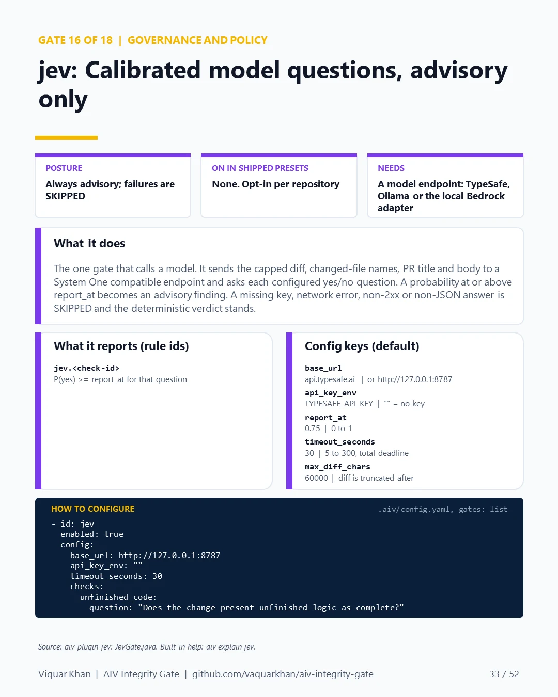
Slide 33 text
GATE 16 OF 18 | GOVERNANCE AND POLICY
jev: Calibrated model questions, advisory only
POSTURE
ON IN SHIPPED PRESETS
NEEDS
Always advisory; failures are SKIPPED
None. Opt-in per repository
A model endpoint: TypeSafe, Ollama or the local Bedrock adapter
What it does
The one gate that calls a model. It sends the capped diff, changed-file names, PR title and body to a System One compatible endpoint and asks each configured yes/no question. A probability at or above report_at becomes an advisory finding. A missing key, network error, non-2xx or non-JSON answer is SKIPPED and the deterministic verdict stands.
What it reports (rule ids)
Config keys (default)
jev.<check-id>
base_url
P(yes) >= report_at for that question
api.typesafe.ai | or http://127.0.0.1:8787
api_key_env
TYPESAFE_API_KEY | "" = no key
report_at
0.75 | 0 to 1
timeout_seconds
30 | 5 to 300, total deadline
max_diff_chars
60000 | diff is truncated after
HOW TO CONFIGURE
.aiv/config.yaml, gates: list
- id: jev
enabled: true
config:
base_url: http://127.0.0.1:8787
api_key_env: ""
timeout_seconds: 30
checks:
unfinished_code:
question: "Does the change present unfinished logic as complete?"
Source: aiv-plugin-jev: JevGate.java. Built-in help: aiv explain jev.
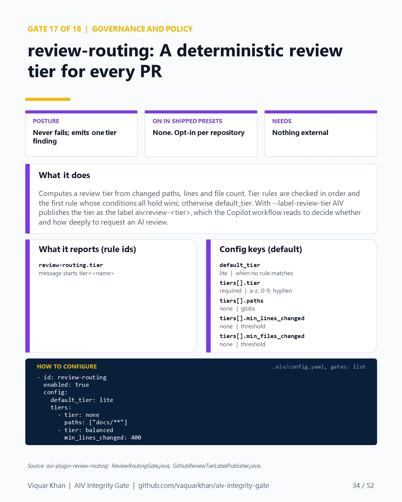
Slide 34 text
GATE 17 OF 18 | GOVERNANCE AND POLICY
review-routing: A deterministic review tier for every PR
POSTURE
ON IN SHIPPED PRESETS
NEEDS
Never fails; emits one tier finding
None. Opt-in per repository
Nothing external
What it does
Computes a review tier from changed paths, lines and file count. Tier rules are checked in order and the first rule whose conditions all hold wins; otherwise default_tier. With --label-review-tier AIV publishes the tier as the label aiv:review-<tier>, which the Copilot workflow reads to decide whether and how deeply to request an AI review.
What it reports (rule ids)
Config keys (default)
review-routing.tier
default_tier
message starts tier=<name>
lite | when no rule matches
tiers[].tier
required | a-z, 0-9, hyphen
tiers[].paths
none | globs
tiers[].min_lines_changed
none | threshold
tiers[].min_files_changed
none | threshold
HOW TO CONFIGURE
.aiv/config.yaml, gates: list
- id: review-routing
enabled: true
config:
default_tier: lite
tiers:
- tier: none
paths: ["docs/**"]
- tier: balanced
min_lines_changed: 400
Source: aiv-plugin-review-routing: ReviewRoutingGate.java, GithubReviewTierLabelPublisher.java.
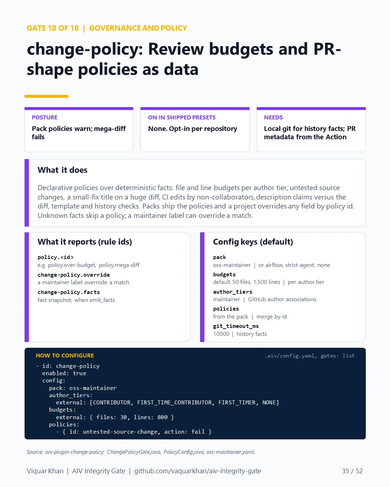
Slide 35 text
GATE 18 OF 18 | GOVERNANCE AND POLICY
change-policy: Review budgets and PR-shape policies as data
POSTURE
ON IN SHIPPED PRESETS
NEEDS
Pack policies warn; mega-diff fails
None. Opt-in per repository
Local git for history facts; PR metadata from the Action
What it does
Declarative policies over deterministic facts: file and line budgets per author tier, untested source changes, a small-fix title on a huge diff, CI edits by non-collaborators, description claims versus the diff, template and history checks. Packs ship the policies and a project overrides any field by policy id. Unknown facts skip a policy; a maintainer label can override a match.
What it reports (rule ids)
Config keys (default)
policy.<id>
pack
e.g. policy.over-budget, policy.mega-diff
oss-maintainer | or airflow, strict-agent, none
budgets
change-policy.override
default 50 files, 1,500 lines | per author tier
a maintainer label overrode a match
author_tiers
change-policy.facts
maintainer | GitHub author associations
fact snapshot, when emit_facts
policies
from the pack | merge by id
git_timeout_ms
10000 | history facts
HOW TO CONFIGURE
.aiv/config.yaml, gates: list
- id: change-policy
enabled: true
config:
pack: oss-maintainer
author_tiers:
external: [CONTRIBUTOR, FIRST_TIME_CONTRIBUTOR, FIRST_TIMER, NONE]
budgets:
external: { files: 30, lines: 800 }
policies:
- { id: untested-source-change, action: fail }
Source: aiv-plugin-change-policy: ChangePolicyGate.java, PolicyConfig.java, oss-maintainer.yaml.
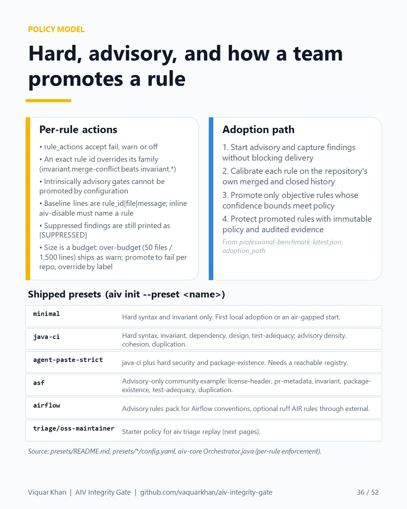
Slide 36 text
POLICY MODEL
Hard, advisory, and how a team promotes a rule
Per-rule actions
Adoption path
• rule_actions accept fail, warn or off
• An exact rule id overrides its family (invariant.merge-conflict beats invariant.*)
• Intrinsically advisory gates cannot be promoted by configuration
• Baseline lines are rule_id|file|message; inline aiv-disable must name a rule
• Suppressed findings are still printed as [SUPPRESSED]
• Size is a budget: over-budget (50 files / 1,500 lines) ships as warn; promote to fail per repo, override by label
1. Start advisory and capture findings without blocking delivery
2. Calibrate each rule on the repository's own merged and closed history
3. Promote only objective rules whose confidence bounds meet policy
4. Protect promoted rules with immutable policy and audited evidence
From professional-benchmark-latest.json, adoption_path
Shipped presets (aiv init --preset <name>)
Hard syntax and invariant only. First local adoption or an air-gapped start.
minimal
Hard syntax, invariant, dependency, design, test-adequacy; advisory density, cohesion, duplication.
java-ci
java-ci plus hard security and package-existence. Needs a reachable registry.
agent-paste-strict
Advisory-only community example: license-header, pr-metadata, invariant, package-existence, test-adequacy, duplication.
asf
Advisory rules pack for Airflow conventions, optional ruff AIR rules through external.
airflow
Starter policy for aiv triage replay (next pages).
triage/oss-maintainer
Source: presets/README.md, presets/*/config.yaml, aiv-core Orchestrator.java (per-rule enforcement).
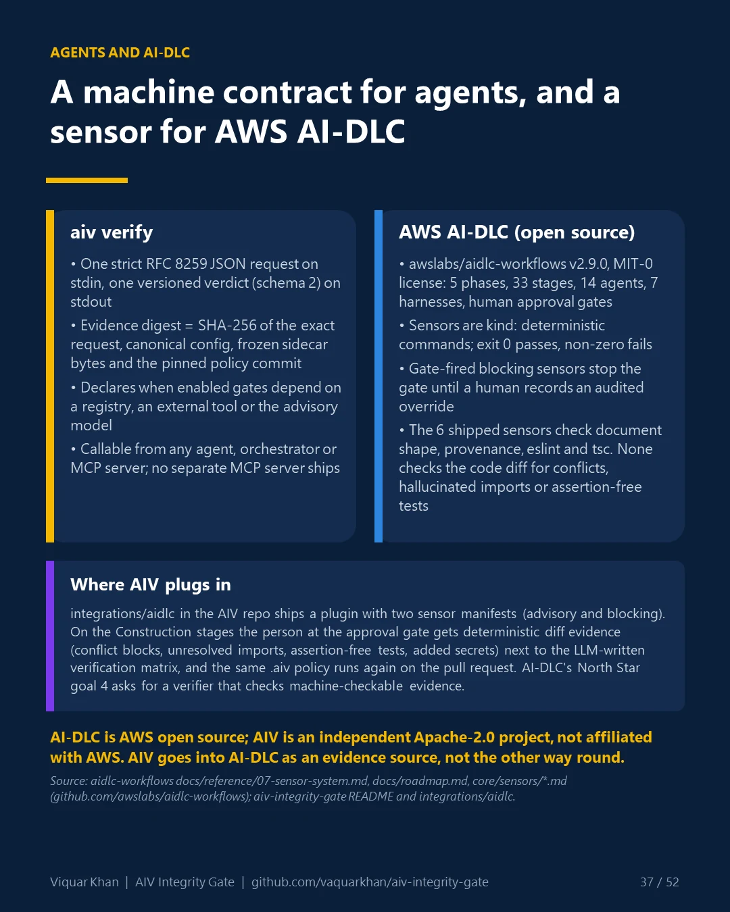
Slide 37 text
AGENTS AND AI-DLC
A machine contract for agents, and a sensor for AWS AI-DLC
aiv verify
AWS AI-DLC (open source)
• One strict RFC 8259 JSON request on stdin, one versioned verdict (schema 2) on stdout
• Evidence digest = SHA-256 of the exact request, canonical config, frozen sidecar bytes and the pinned policy commit
• Declares when enabled gates depend on a registry, an external tool or the advisory model
• Callable from any agent, orchestrator or MCP server; no separate MCP server ships
• awslabs/aidlc-workflows v2.9.0, MIT-0 license: 5 phases, 33 stages, 14 agents, 7 harnesses, human approval gates
• Sensors are kind: deterministic commands; exit 0 passes, non-zero fails
• Gate-fired blocking sensors stop the gate until a human records an audited override
• The 6 shipped sensors check document shape, provenance, eslint and tsc. None checks the code diff for conflicts, hallucinated imports or assertion-free tests
Where AIV plugs in
integrations/aidlc in the AIV repo ships a plugin with two sensor manifests (advisory and blocking). On the Construction stages the person at the approval gate gets deterministic diff evidence (conflict blocks, unresolved imports, assertion-free tests, added secrets) next to the LLM-written verification matrix, and the same .aiv policy runs again on the pull request. AI-DLC's North Star goal 4 asks for a verifier that checks machine-checkable evidence.
AI-DLC is AWS open source; AIV is an independent Apache-2.0 project, not affiliated with AWS. AIV goes into AI-DLC as an evidence source, not the other way round.
Source: aidlc-workflows docs/reference/07-sensor-system.md, docs/roadmap.md, core/sensors/*.md (github.com/awslabs/aidlc-workflows); aiv-integrity-gate README and integrations/aidlc.
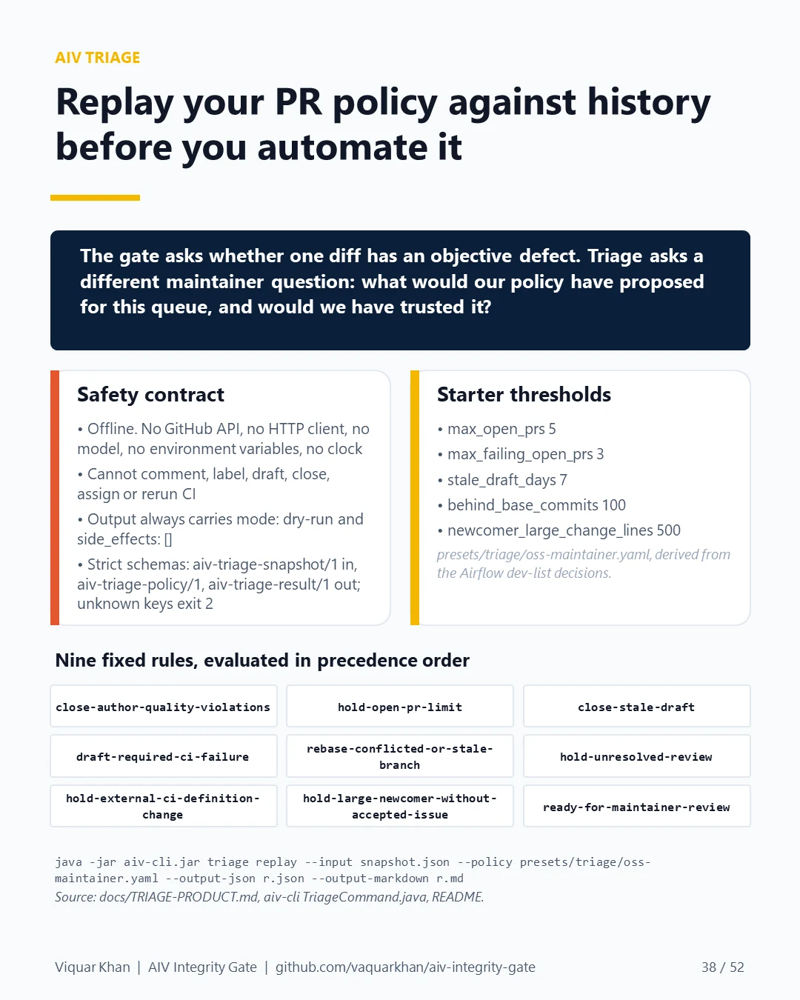
Slide 38 text
AIV TRIAGE
Replay your PR policy against history before you automate it
The gate asks whether one diff has an objective defect. Triage asks a different maintainer question: what would our policy have proposed for this queue, and would we have trusted it?
Safety contract
Starter thresholds
• Offline. No GitHub API, no HTTP client, no model, no environment variables, no clock
• Cannot comment, label, draft, close, assign or rerun CI
• Output always carries mode: dry-run and side_effects: []
• Strict schemas: aiv-triage-snapshot/1 in, aiv-triage-policy/1, aiv-triage-result/1 out; unknown keys exit 2
• max_open_prs 5
• max_failing_open_prs 3
• stale_draft_days 7
• behind_base_commits 100
• newcomer_large_change_lines 500
presets/triage/oss-maintainer.yaml, derived from the Airflow dev-list decisions.
Nine fixed rules, evaluated in precedence order
close-author-quality-violations
hold-open-pr-limit
close-stale-draft
draft-required-ci-failure
rebase-conflicted-or-stale-branch
hold-unresolved-review
hold-external-ci-definition-change
hold-large-newcomer-without-accepted-issue
ready-for-maintainer-review
java -jar aiv-cli.jar triage replay --input snapshot.json --policy presets/triage/oss-maintainer.yaml --output-json r.json --output-markdown r.md
Source: docs/TRIAGE-PRODUCT.md, aiv-cli TriageCommand.java, README.
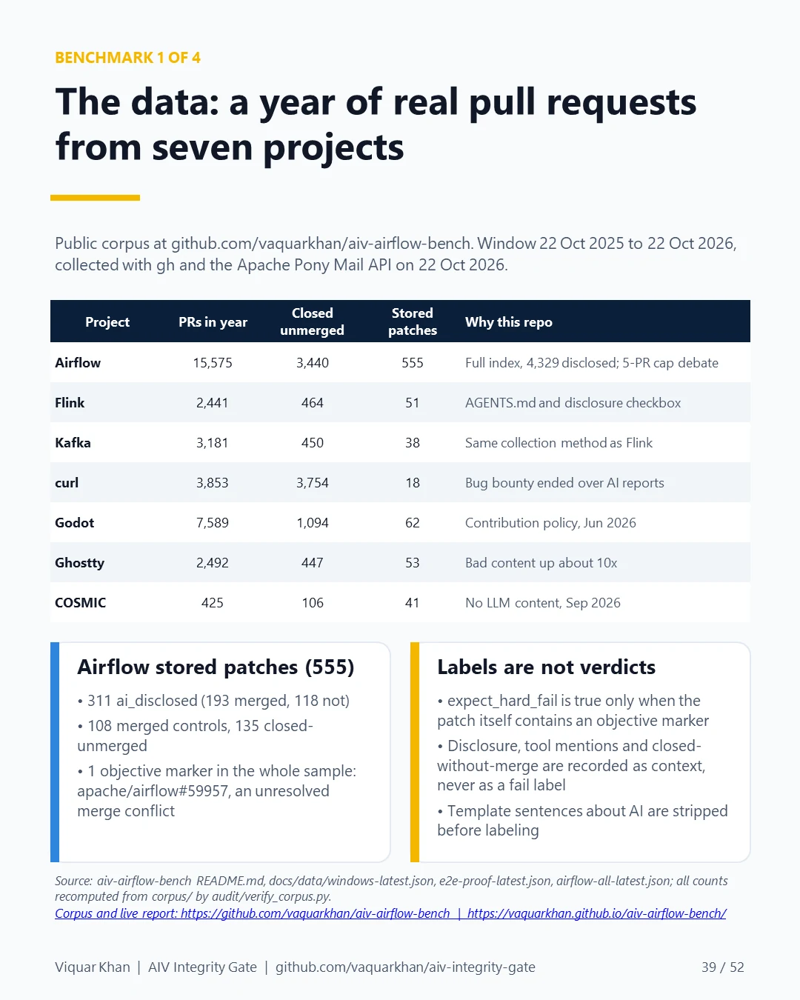
Slide 39 text
BENCHMARK 1 OF 4
The data: a year of real pull requests from seven projects
Public corpus at github.com/vaquarkhan/aiv-airflow-bench. Window 22 Oct 2025 to 22 Oct 2026, collected with gh and the Apache Pony Mail API on 22 Oct 2026.
Project
PRs in year
Closed unmerged
Stored patches
Why this repo
Airflow
15,575
3,440
555
Full index, 4,329 disclosed; 5-PR cap debate
Flink
2,441
464
51
AGENTS.md and disclosure checkbox
Kafka
3,181
450
38
Same collection method as Flink
curl
3,853
3,754
18
Bug bounty ended over AI reports
Godot
7,589
1,094
62
Contribution policy, Jun 2026
Ghostty
2,492
447
53
Bad content up about 10x
COSMIC
425
106
41
No LLM content, Sep 2026
Airflow stored patches (555)
Labels are not verdicts
• 311 ai_disclosed (193 merged, 118 not)
• 108 merged controls, 135 closed-unmerged
• 1 objective marker in the whole sample: apache/airflow#59957, an unresolved merge conflict
• expect_hard_fail is true only when the patch itself contains an objective marker
• Disclosure, tool mentions and closed-without-merge are recorded as context, never as a fail label
• Template sentences about AI are stripped before labeling
Source: aiv-airflow-bench README.md, docs/data/windows-latest.json, e2e-proof-latest.json, airflow-all-latest.json; all counts recomputed from corpus/ by audit/verify_corpus.py.
Corpus and live report: https://github.com/vaquarkhan/aiv-airflow-bench | https://vaquarkhan.github.io/aiv-airflow-bench/
Links on this slide
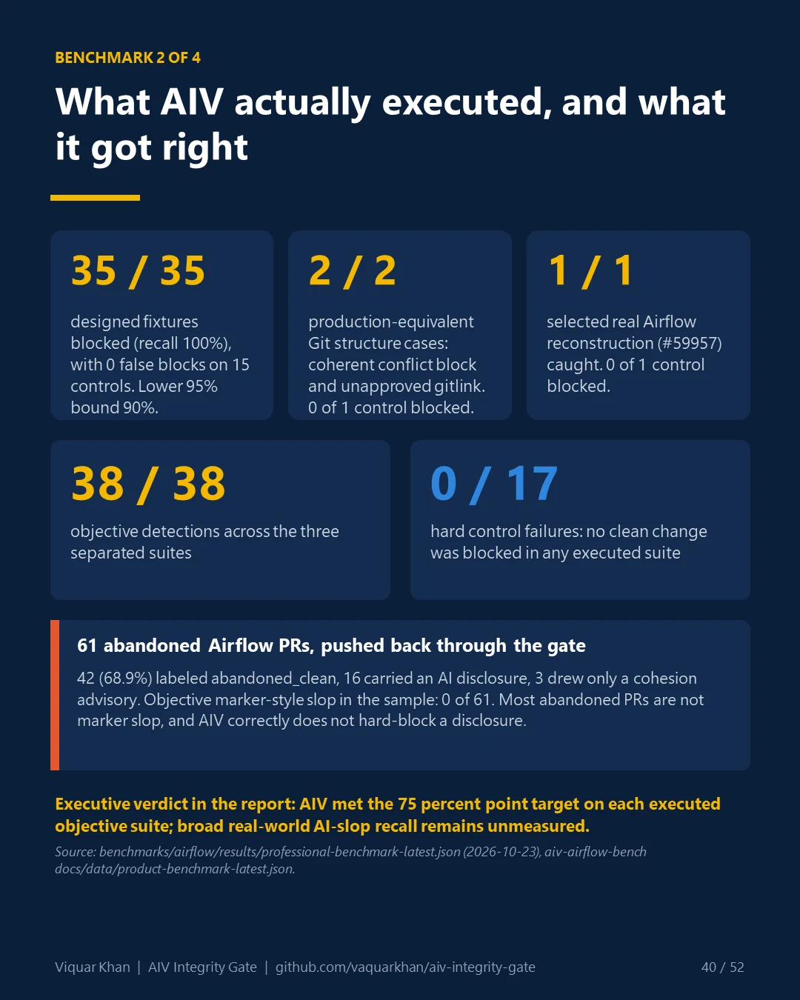
Slide 40 text
BENCHMARK 2 OF 4
What AIV actually executed, and what it got right
designed fixtures blocked (recall 100%), with 0 false blocks on 15 controls. Lower 95% bound 90%.
production-equivalent Git structure cases: coherent conflict block and unapproved gitlink. 0 of 1 control blocked.
selected real Airflow reconstruction (#59957) caught. 0 of 1 control blocked.
objective detections across the three separated suites
hard control failures: no clean change was blocked in any executed suite
61 abandoned Airflow PRs, pushed back through the gate
42 (68.9%) labeled abandoned_clean, 16 carried an AI disclosure, 3 drew only a cohesion advisory. Objective marker-style slop in the sample: 0 of 61. Most abandoned PRs are not marker slop, and AIV correctly does not hard-block a disclosure.
Executive verdict in the report: AIV met the 75 percent point target on each executed objective suite; broad real-world AI-slop recall remains unmeasured.
Source: benchmarks/airflow/results/professional-benchmark-latest.json (2026-10-23), aiv-airflow-bench docs/data/product-benchmark-latest.json.
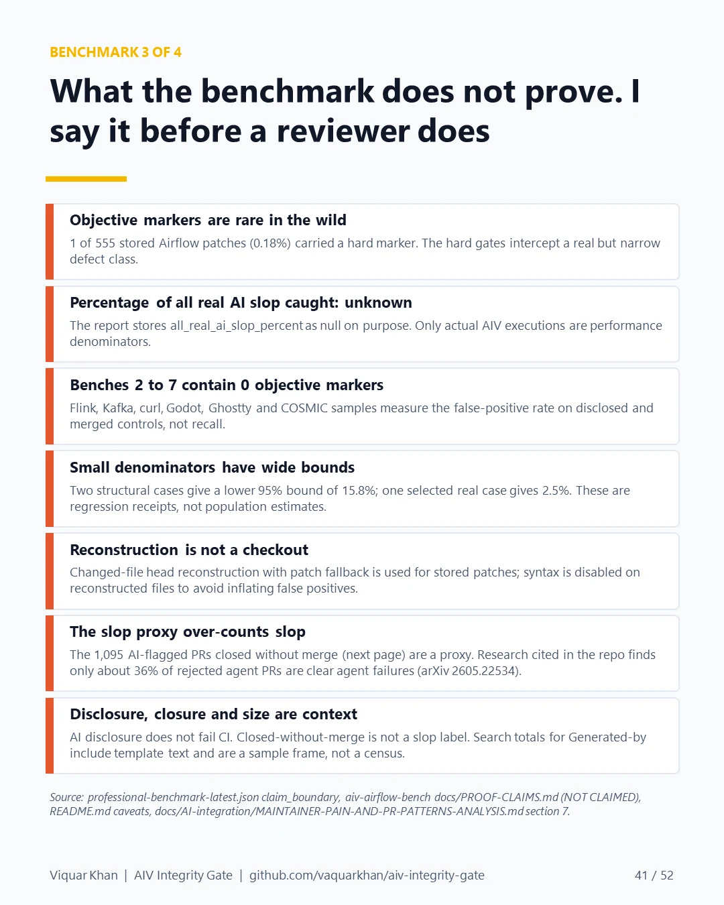
Slide 41 text
BENCHMARK 3 OF 4
What the benchmark does not prove. I say it before a reviewer does
Objective markers are rare in the wild
1 of 555 stored Airflow patches (0.18%) carried a hard marker. The hard gates intercept a real but narrow defect class.
Percentage of all real AI slop caught: unknown
The report stores all_real_ai_slop_percent as null on purpose. Only actual AIV executions are performance denominators.
Benches 2 to 7 contain 0 objective markers
Flink, Kafka, curl, Godot, Ghostty and COSMIC samples measure the false-positive rate on disclosed and merged controls, not recall.
Small denominators have wide bounds
Two structural cases give a lower 95% bound of 15.8%; one selected real case gives 2.5%. These are regression receipts, not population estimates.
Reconstruction is not a checkout
Changed-file head reconstruction with patch fallback is used for stored patches; syntax is disabled on reconstructed files to avoid inflating false positives.
The slop proxy over-counts slop
The 1,095 AI-flagged PRs closed without merge (next page) are a proxy. Research cited in the repo finds only about 36% of rejected agent PRs are clear agent failures (arXiv 2605.22534).
Disclosure, closure and size are context
AI disclosure does not fail CI. Closed-without-merge is not a slop label. Search totals for Generated-by include template text and are a sample frame, not a census.
Source: professional-benchmark-latest.json claim_boundary, aiv-airflow-bench docs/PROOF-CLAIMS.md (NOT CLAIMED), README.md caveats, docs/AI-integration/MAINTAINER-PAIN-AND-PR-PATTERNS-ANALYSIS.md section 7.
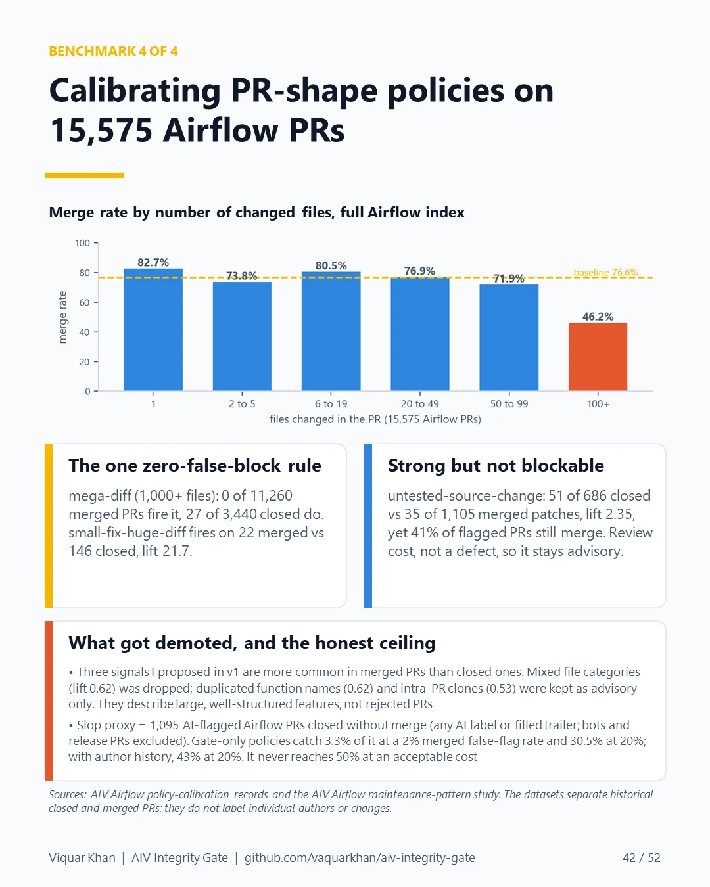
Slide 42 text
BENCHMARK 4 OF 4
Calibrating PR-shape policies on 15,575 Airflow PRs
Merge rate by number of changed files, full Airflow index
The one zero-false-block rule
Strong but not blockable
mega-diff (1,000+ files): 0 of 11,260 merged PRs fire it, 27 of 3,440 closed do. small-fix-huge-diff fires on 22 merged vs 146 closed, lift 21.7.
untested-source-change: 51 of 686 closed vs 35 of 1,105 merged patches, lift 2.35, yet 41% of flagged PRs still merge. Review cost, not a defect, so it stays advisory.
What got demoted, and the honest ceiling
• Three signals I proposed in v1 are more common in merged PRs than closed ones. Mixed file categories (lift 0.62) was dropped; duplicated function names (0.62) and intra-PR clones (0.53) were kept as advisory only. They describe large, well-structured features, not rejected PRs
• Slop proxy = 1,095 AI-flagged Airflow PRs closed without merge (any AI label or filled trailer; bots and release PRs excluded). Gate-only policies catch 3.3% of it at a 2% merged false-flag rate and 30.5% at 20%; with author history, 43% at 20%. It never reaches 50% at an acceptable cost
Sources: AIV Airflow policy-calibration records and the AIV Airflow maintenance-pattern study. The datasets separate historical closed and merged PRs; they do not label individual authors or changes.
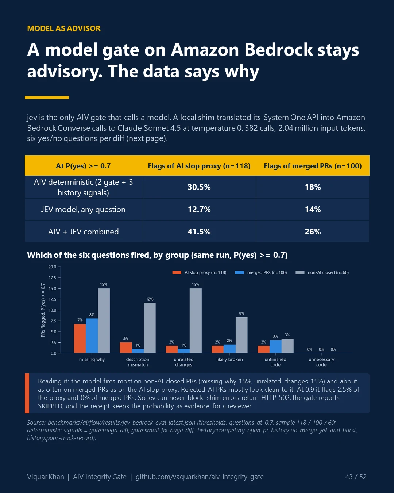
Slide 43 text
MODEL AS ADVISOR
A model gate on Amazon Bedrock stays advisory. The data says why
jev is the only AIV gate that calls a model. A local shim translated its System One API into Amazon Bedrock Converse calls to Claude Sonnet 4.5 at temperature 0: 382 calls, 2.04 million input tokens, six yes/no questions per diff (next page).
At P(yes) >= 0.7
Flags of AI slop proxy (n=118)
Flags of merged PRs (n=100)
AIV deterministic (2 gate + 3 history signals)
30.5%
18%
JEV model, any question
12.7%
14%
AIV + JEV combined
41.5%
26%
Which of the six questions fired, by group (same run, P(yes) >= 0.7)
Reading it: the model fires most on non-AI closed PRs (missing why 15%, unrelated changes 15%) and about as often on merged PRs as on the AI slop proxy. Rejected AI PRs mostly look clean to it. At 0.9 it flags 2.5% of the proxy and 0% of merged PRs. So jev can never block: shim errors return HTTP 502, the gate reports SKIPPED, and the receipt keeps the probability as evidence for a reviewer.
Source: benchmarks/airflow/results/jev-bedrock-eval-latest.json (thresholds, questions_at_0.7, sample 118 / 100 / 60; deterministic_signals = gate:mega-diff, gate:small-fix-huge-diff, history:competing-open-pr, history:no-merge-yet-and-burst, history:poor-track-record).
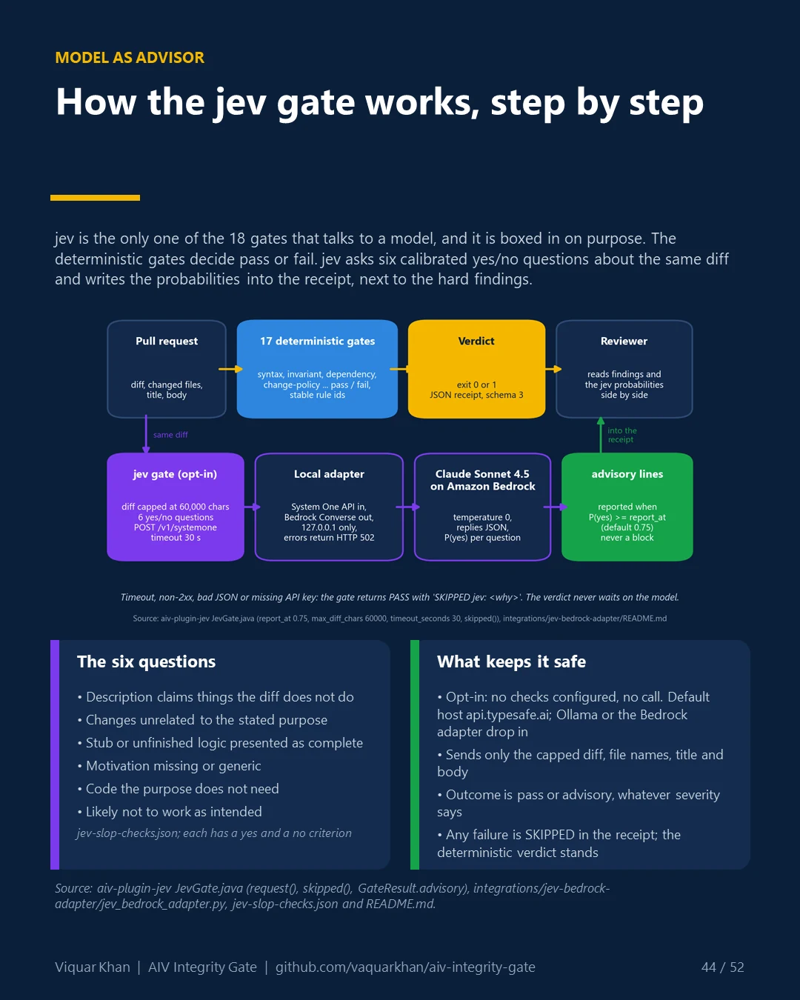
Slide 44 text
MODEL AS ADVISOR
How the jev gate works, step by step
jev is the only one of the 18 gates that talks to a model, and it is boxed in on purpose. The deterministic gates decide pass or fail. jev asks six calibrated yes/no questions about the same diff and writes the probabilities into the receipt, next to the hard findings.
The six questions
What keeps it safe
• Description claims things the diff does not do
• Changes unrelated to the stated purpose
• Stub or unfinished logic presented as complete
• Motivation missing or generic
• Code the purpose does not need
• Likely not to work as intended
jev-slop-checks.json; each has a yes and a no criterion
• Opt-in: no checks configured, no call. Default host api.typesafe.ai; Ollama or the Bedrock adapter drop in
• Sends only the capped diff, file names, title and body
• Outcome is pass or advisory, whatever severity says
• Any failure is SKIPPED in the receipt; the deterministic verdict stands
Source: aiv-plugin-jev JevGate.java (request(), skipped(), GateResult.advisory), integrations/jev-bedrock-adapter/jev_bedrock_adapter.py, jev-slop-checks.json and README.md.
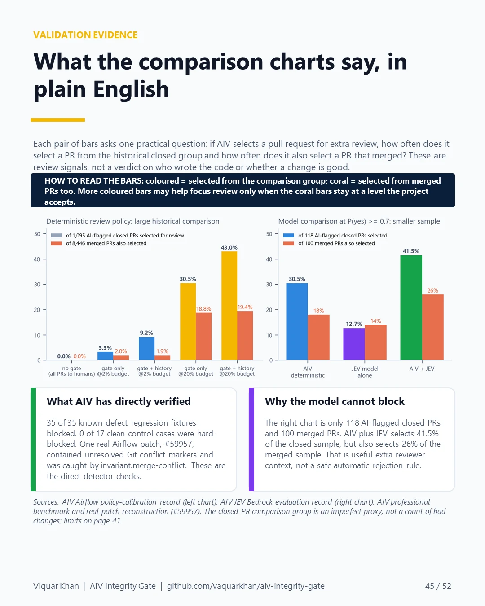
Slide 45 text
VALIDATION EVIDENCE
What the comparison charts say, in plain English
Each pair of bars asks one practical question: if AIV selects a pull request for extra review, how often does it select a PR from the historical closed group and how often does it also select a PR that merged? These are review signals, not a verdict on who wrote the code or whether a change is good.
HOW TO READ THE BARS: coloured = selected from the comparison group; coral = selected from merged PRs too. More coloured bars may help focus review only when the coral bars stay at a level the project accepts.
What AIV has directly verified
Why the model cannot block
35 of 35 known-defect regression fixtures blocked. 0 of 17 clean control cases were hard-blocked. One real Airflow patch, #59957, contained unresolved Git conflict markers and was caught by invariant.merge-conflict. These are the direct detector checks.
The right chart is only 118 AI-flagged closed PRs and 100 merged PRs. AIV plus JEV selects 41.5% of the closed sample, but also selects 26% of the merged sample. That is useful extra reviewer context, not a safe automatic rejection rule.
Sources: AIV Airflow policy-calibration record (left chart); AIV JEV Bedrock evaluation record (right chart); AIV professional benchmark and real-patch reconstruction (#59957). The closed-PR comparison group is an imperfect proxy, not a count of bad changes; limits on page 41.
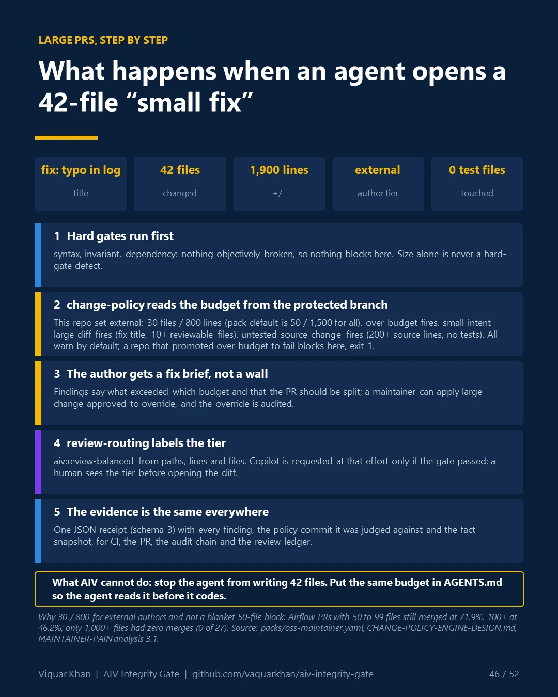
Slide 46 text
LARGE PRS, STEP BY STEP
What happens when an agent opens a 42-file “small fix”
fix: typo in log
42 files
1,900 lines
external
0 test files
title
changed
+/-
author tier
touched
1 Hard gates run first
syntax, invariant, dependency: nothing objectively broken, so nothing blocks here. Size alone is never a hard-gate defect.
2 change-policy reads the budget from the protected branch
This repo set external: 30 files / 800 lines (pack default is 50 / 1,500 for all). over-budget fires. small-intent-large-diff fires (fix title, 10+ reviewable files). untested-source-change fires (200+ source lines, no tests). All warn by default; a repo that promoted over-budget to fail blocks here, exit 1.
3 The author gets a fix brief, not a wall
Findings say what exceeded which budget and that the PR should be split; a maintainer can apply large-change-approved to override, and the override is audited.
4 review-routing labels the tier
aiv:review-balanced from paths, lines and files. Copilot is requested at that effort only if the gate passed; a human sees the tier before opening the diff.
5 The evidence is the same everywhere
One JSON receipt (schema 3) with every finding, the policy commit it was judged against and the fact snapshot, for CI, the PR, the audit chain and the review ledger.
What AIV cannot do: stop the agent from writing 42 files. Put the same budget in AGENTS.md so the agent reads it before it codes.
Why 30 / 800 for external authors and not a blanket 50-file block: Airflow PRs with 50 to 99 files still merged at 71.9%, 100+ at 46.2%; only 1,000+ files had zero merges (0 of 27). Source: packs/oss-maintainer.yaml, CHANGE-POLICY-ENGINE-DESIGN.md, MAINTAINER-PAIN analysis 3.1.
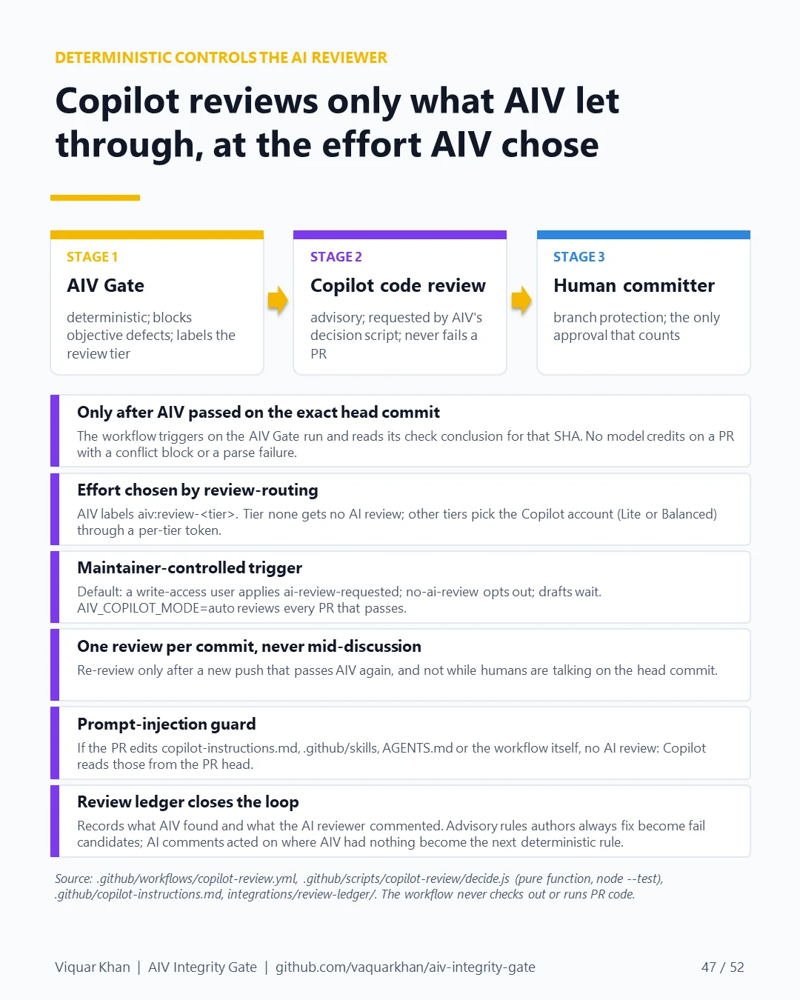
Slide 47 text
DETERMINISTIC CONTROLS THE AI REVIEWER
Copilot reviews only what AIV let through, at the effort AIV chose
STAGE 1
STAGE 2
STAGE 3
AIV Gate
Copilot code review
Human committer
deterministic; blocks objective defects; labels the review tier
advisory; requested by AIV's decision script; never fails a PR
branch protection; the only approval that counts
Only after AIV passed on the exact head commit
The workflow triggers on the AIV Gate run and reads its check conclusion for that SHA. No model credits on a PR with a conflict block or a parse failure.
Effort chosen by review-routing
AIV labels aiv:review-<tier>. Tier none gets no AI review; other tiers pick the Copilot account (Lite or Balanced) through a per-tier token.
Maintainer-controlled trigger
Default: a write-access user applies ai-review-requested; no-ai-review opts out; drafts wait. AIV_COPILOT_MODE=auto reviews every PR that passes.
One review per commit, never mid-discussion
Re-review only after a new push that passes AIV again, and not while humans are talking on the head commit.
Prompt-injection guard
If the PR edits copilot-instructions.md, .github/skills, AGENTS.md or the workflow itself, no AI review: Copilot reads those from the PR head.
Review ledger closes the loop
Records what AIV found and what the AI reviewer commented. Advisory rules authors always fix become fail candidates; AI comments acted on where AIV had nothing become the next deterministic rule.
Source: .github/workflows/copilot-review.yml, .github/scripts/copilot-review/decide.js (pure function, node --test), .github/copilot-instructions.md, integrations/review-ledger/. The workflow never checks out or runs PR code.
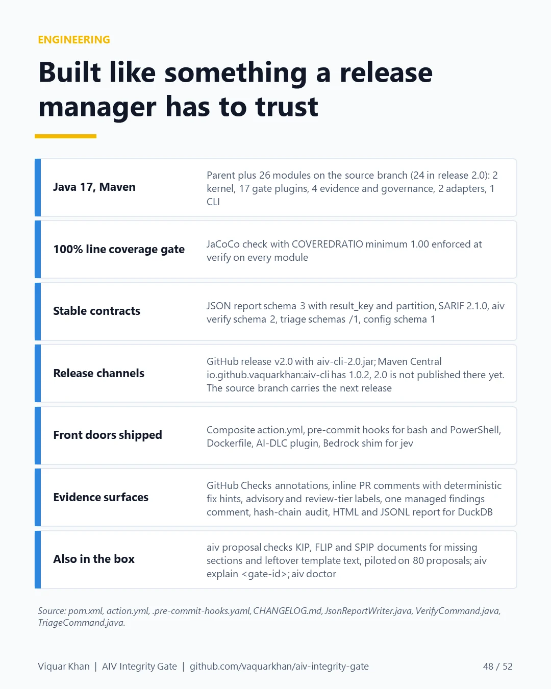
Slide 48 text
ENGINEERING
Built like something a release manager has to trust
Java 17, Maven
Parent plus 26 modules on the source branch (24 in release 2.0): 2 kernel, 17 gate plugins, 4 evidence and governance, 2 adapters, 1 CLI
100% line coverage gate
JaCoCo check with COVEREDRATIO minimum 1.00 enforced at verify on every module
Stable contracts
JSON report schema 3 with result_key and partition, SARIF 2.1.0, aiv verify schema 2, triage schemas /1, config schema 1
Release channels
GitHub release v2.0 with aiv-cli-2.0.jar; Maven Central io.github.vaquarkhan:aiv-cli has 1.0.2, 2.0 is not published there yet. The source branch carries the next release
Front doors shipped
Composite action.yml, pre-commit hooks for bash and PowerShell, Dockerfile, AI-DLC plugin, Bedrock shim for jev
Evidence surfaces
GitHub Checks annotations, inline PR comments with deterministic fix hints, advisory and review-tier labels, one managed findings comment, hash-chain audit, HTML and JSONL report for DuckDB
Also in the box
aiv proposal checks KIP, FLIP and SPIP documents for missing sections and leftover template text, piloted on 80 proposals; aiv explain <gate-id>; aiv doctor
Source: pom.xml, action.yml, .pre-commit-hooks.yaml, CHANGELOG.md, JsonReportWriter.java, VerifyCommand.java, TriageCommand.java.
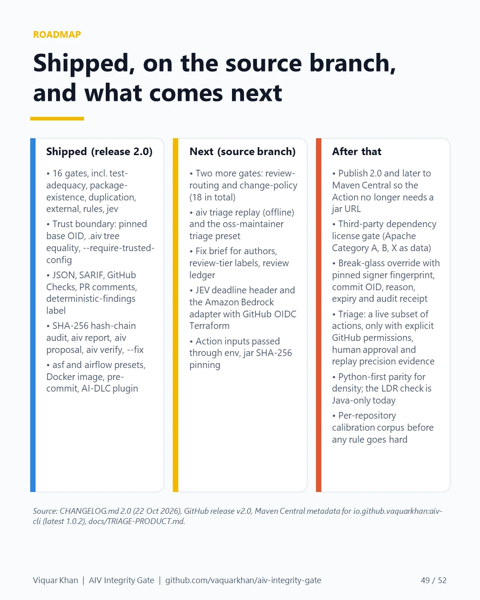
Slide 49 text
ROADMAP
Shipped, on the source branch, and what comes next
Shipped (release 2.0)
Next (source branch)
After that
• 16 gates, incl. test-adequacy, package-existence, duplication, external, rules, jev
• Trust boundary: pinned base OID, .aiv tree equality, --require-trusted-config
• JSON, SARIF, GitHub Checks, PR comments, deterministic-findings label
• SHA-256 hash-chain audit, aiv report, aiv proposal, aiv verify, --fix
• asf and airflow presets, Docker image, pre-commit, AI-DLC plugin
• Two more gates: review-routing and change-policy (18 in total)
• aiv triage replay (offline) and the oss-maintainer triage preset
• Fix brief for authors, review-tier labels, review ledger
• JEV deadline header and the Amazon Bedrock adapter with GitHub OIDC Terraform
• Action inputs passed through env, jar SHA-256 pinning
• Publish 2.0 and later to Maven Central so the Action no longer needs a jar URL
• Third-party dependency license gate (Apache Category A, B, X as data)
• Break-glass override with pinned signer fingerprint, commit OID, reason, expiry and audit receipt
• Triage: a live subset of actions, only with explicit GitHub permissions, human approval and replay precision evidence
• Python-first parity for density; the LDR check is Java-only today
• Per-repository calibration corpus before any rule goes hard
Source: CHANGELOG.md 2.0 (22 Oct 2026), GitHub release v2.0, Maven Central metadata for io.github.vaquarkhan:aiv-cli (latest 1.0.2), docs/TRIAGE-PRODUCT.md.
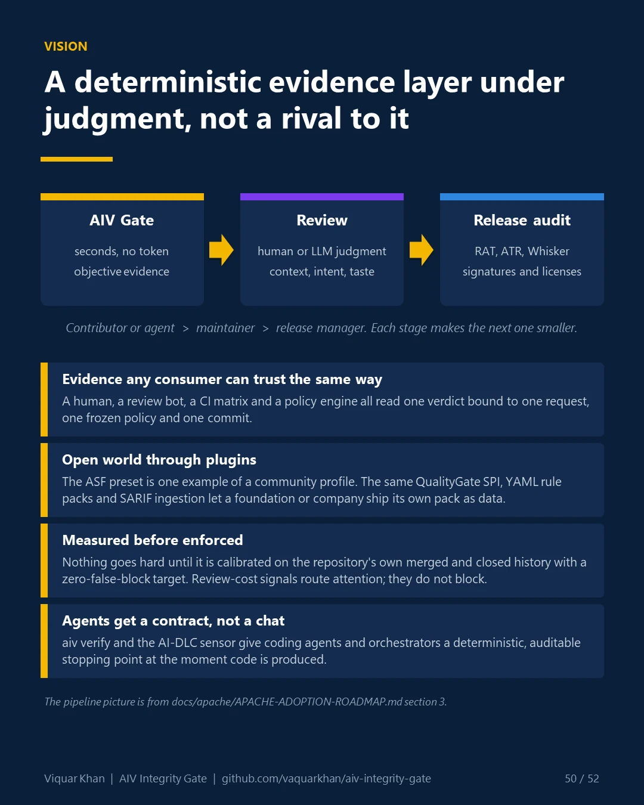
Slide 50 text
VISION
A deterministic evidence layer under judgment, not a rival to it
AIV Gate
Review
Release audit
seconds, no token objective evidence
human or LLM judgment context, intent, taste
RAT, ATR, Whisker signatures and licenses
Contributor or agent > maintainer > release manager. Each stage makes the next one smaller.
Evidence any consumer can trust the same way
A human, a review bot, a CI matrix and a policy engine all read one verdict bound to one request, one frozen policy and one commit.
Open world through plugins
The ASF preset is one example of a community profile. The same QualityGate SPI, YAML rule packs and SARIF ingestion let a foundation or company ship its own pack as data.
Measured before enforced
Nothing goes hard until it is calibrated on the repository's own merged and closed history with a zero-false-block target. Review-cost signals route attention; they do not block.
Agents get a contract, not a chat
aiv verify and the AI-DLC sensor give coding agents and orchestrators a deterministic, auditable stopping point at the moment code is produced.
The pipeline picture is from docs/apache/APACHE-ADOPTION-ROADMAP.md section 3.
Slide 51 text
REFERENCES
Every external fact in this deck, and where to check it
Corpus, collectors and labels (public)
github.com/vaquarkhan/aiv-airflow-bench
Live benchmark report
vaquarkhan.github.io/aiv-airflow-bench/
AIV source, docs, benchmark results JSON
github.com/vaquarkhan/aiv-integrity-gate
GitHub release v2.0 (aiv-cli-2.0.jar)
github.com/vaquarkhan/aiv-integrity-gate/releases/tag/v2.0
Maven Central: io.github.vaquarkhan : aiv-cli (latest 1.0.2)
central.sonatype.com/artifact/io.github.vaquarkhan/aiv-cli
Airflow: 5-open-PR cap result, 24 Sep 2026
lists.apache.org/thread/901dt9qdqjtqrh7ow5cdnd8sp0dl3llp
Airflow: cap made a soft limit, 210 PRs closed
lists.apache.org/thread/pbry9otfdbkr1n85scq3v9mdlp15fgg2
Jarek Potiuk, queue ~260 to ~870 to ~590, 5 Oct 2026
lists.apache.org/thread/ky392mrrcmj312y1r276r30p584n804c
Vincent Beck, reviewing is the bottleneck, 21 Sep 2026
lists.apache.org/thread/ofn4gljbxbyslmv2xlftk9o1hz8d8v9w
Christos Bisias, 1,024 open PRs, 21 Sep 2026
lists.apache.org/thread/np7kvztgqt3c8o1fmsb318bloznytfdv
Ash Berlin-Taylor, drive-by AI slop, 8 Jun 2026
lists.apache.org/thread/g34gx1tv8slorfy9hw7ks8wkkk86nxq0
Kaxil Naik, PRs with no real motivation, 14 Jun 2026
lists.apache.org/thread/qtn6nr61nchwnvyxox5p8wfww7ypr64x
Godot Foundation contribution policy, 30 Jun 2026
godotengine.org/article/contribution-policy-2026/
Ghostty, Mitchell Hashimoto, 22 Jan 2026
github.com/ghostty-org/ghostty/pull/10412
curl bug bounty ending, Jan 2026
github.com/curl/curl/pull/20312
Apache log4j2, Piotr Karwasz, 25 Feb 2026
github.com/apache/logging-log4j2/discussions/4052
Node.js HackerOne Signal requirement
nodejs.org/en/blog/announcements/hackerone-signal-requirement
COSMIC stops accepting LLM content (Linuxiac, Oct 2026)
linuxiac.com/cosmic-stops-accepting-llm-generated-content-in-pull-requests/
apache/airflow#59957, the one real marker case
github.com/apache/airflow/pull/59957
apache/airflow#60158, Gen-AI question added to PR template, 9 Jan 2026
github.com/apache/airflow/pull/60158
AWS AI-DLC, AWS open source, MIT-0 (integration target)
github.com/awslabs/aidlc-workflows
Mailing-list permalinks resolved through the lists.apache.org Pony Mail API. Every link above was re-fetched on 7 Nov 2026; release facts were rechecked on GitHub and Maven Central the same day.
Links on this slide
- github.com/vaquarkhan/aiv-airflow-bench
- vaquarkhan.github.io/aiv-airflow-bench/
- github.com/vaquarkhan/aiv-integrity-gate
- github.com/vaquarkhan/aiv-integrity-gate/releases/tag/v2.0
- central.sonatype.com/artifact/io.github.vaquarkhan/aiv-cli
- lists.apache.org/thread/901dt9qdqjtqrh7ow5cdnd8sp0dl3llp
- lists.apache.org/thread/pbry9otfdbkr1n85scq3v9mdlp15fgg2
- lists.apache.org/thread/ky392mrrcmj312y1r276r30p584n804c
- lists.apache.org/thread/ofn4gljbxbyslmv2xlftk9o1hz8d8v9w
- lists.apache.org/thread/np7kvztgqt3c8o1fmsb318bloznytfdv
- lists.apache.org/thread/g34gx1tv8slorfy9hw7ks8wkkk86nxq0
- lists.apache.org/thread/qtn6nr61nchwnvyxox5p8wfww7ypr64x
- godotengine.org/article/contribution-policy-2026/
- github.com/ghostty-org/ghostty/pull/10412
- github.com/curl/curl/pull/20312
- github.com/apache/logging-log4j2/discussions/4052
- nodejs.org/en/blog/announcements/hackerone-signal-requirement
- linuxiac.com/cosmic-stops-accepting-llm-generated-content-in-pull-requests/
- github.com/apache/airflow/pull/59957
- github.com/apache/airflow/pull/60158
- github.com/awslabs/aidlc-workflows
Slide 52 text
TRY IT, BREAK IT, TELL ME
Deterministic evidence first. Judgment second. Claims only as big as the data.
Gate source, docs and benchmarks
github.com/vaquarkhan/aiv-integrity-gate
Public corpus and live report
github.com/vaquarkhan/aiv-airflow-bench vaquarkhan.github.io/aiv-airflow-bench
Release 2.0
github.com/vaquarkhan/aiv-integrity-gate/releases/tag/v2.0
AWS AI-DLC, AWS open source (integration target)
github.com/awslabs/aidlc-workflows
Viquar Khan | Apache 2.0 | Not affiliated with the Apache Software Foundation
Start advisory on one repository. Send me the false positives. That is the only way a hard rule earns its place.